<!DOCTYPE html>

<html xmlns="http://www.w3.org/1999/xhtml" lang="python">
  <head>
    <meta charset="utf-8" />
    <title>3.1.1. batch &#8212; hs_process 0.0.1 documentation</title>
    <link rel="stylesheet" href="../_static/bootstrap-sphinx.css" type="text/css" />
    <link rel="stylesheet" href="../_static/pygments.css" type="text/css" />
    <link rel="stylesheet" type="text/css" href="../_static/graphviz.css" />
    <script type="text/javascript" id="documentation_options" data-url_root="../" src="../_static/documentation_options.js"></script>
    <script type="text/javascript" src="../_static/jquery.js"></script>
    <script type="text/javascript" src="../_static/underscore.js"></script>
    <script type="text/javascript" src="../_static/doctools.js"></script>
    <script type="text/javascript" src="../_static/language_data.js"></script>
    <script crossorigin="anonymous" integrity="sha256-Ae2Vz/4ePdIu6ZyI/5ZGsYnb+m0JlOmKPjt6XZ9JJkA=" type="text/javascript" src="https://cdnjs.cloudflare.com/ajax/libs/require.js/2.3.4/require.min.js"></script>
    <script async="async" type="text/javascript" src="https://cdnjs.cloudflare.com/ajax/libs/mathjax/2.7.5/latest.js?config=TeX-AMS-MML_HTMLorMML"></script>
    <script type="text/x-mathjax-config">MathJax.Hub.Config({"tex2jax": {"inlineMath": [["$", "$"], ["\\(", "\\)"]], "processEscapes": true, "ignoreClass": "document", "processClass": "math|output_area"}})</script>
    <link rel="index" title="Index" href="../genindex.html" />
    <link rel="search" title="Search" href="../search.html" />
    <link rel="next" title="3.1.2. defaults" href="hs_process.defaults.html" />
    <link rel="prev" title="3. API" href="../my_hs_process_api.html" />
<meta charset='utf-8'>
<meta http-equiv='X-UA-Compatible' content='IE=edge,chrome=1'>
<meta name='viewport' content='width=device-width, initial-scale=1.0, maximum-scale=1'>
<meta name="apple-mobile-web-app-capable" content="yes">
<script type="text/javascript" src="../_static/js/jquery-1.11.0.min.js "></script>
<script type="text/javascript" src="../_static/js/jquery-fix.js "></script>
<script type="text/javascript" src="../_static/bootstrap-3.3.7/js/bootstrap.min.js "></script>
<script type="text/javascript" src="../_static/bootstrap-sphinx.js "></script>

  </head><body>

  <div id="navbar" class="navbar navbar-default navbar-fixed-top">
    <div class="container">
      <div class="navbar-header">
        <!-- .btn-navbar is used as the toggle for collapsed navbar content -->
        <button type="button" class="navbar-toggle" data-toggle="collapse" data-target=".nav-collapse">
          <span class="icon-bar"></span>
          <span class="icon-bar"></span>
          <span class="icon-bar"></span>
        </button>
        <a class="navbar-brand" href="../index.html">
          hs_process</a>
        <span class="navbar-text navbar-version pull-left"><b></b></span>
      </div>

        <div class="collapse navbar-collapse nav-collapse">
          <ul class="nav navbar-nav">
            
                <li><a href="https://github.com/tnigon/hs_process">Github</a></li>
                <li><a href="http://www.spectralpython.net/">Spectral Python</a></li>
            
            
              <li class="dropdown globaltoc-container">
  <a role="button"
     id="dLabelGlobalToc"
     data-toggle="dropdown"
     data-target="#"
     href="../index.html">Contents <b class="caret"></b></a>
  <ul class="dropdown-menu globaltoc"
      role="menu"
      aria-labelledby="dLabelGlobalToc"><ul class="current">
<li class="toctree-l1"><a class="reference internal" href="../installation.html">1. Setup and Installation</a></li>
<li class="toctree-l1"><a class="reference internal" href="../tutorial_hsio.html">2. Tutorial: <code class="docutils literal notranslate"><span class="pre">hsio</span></code></a></li>
<li class="toctree-l1 current"><a class="reference internal" href="../my_hs_process_api.html">3. API</a><ul class="current">
<li class="toctree-l2 current"><a class="current reference internal" href="#">3.1.1. batch</a></li>
<li class="toctree-l2"><a class="reference internal" href="hs_process.defaults.html">3.1.2. defaults</a></li>
<li class="toctree-l2"><a class="reference internal" href="hs_process.hsio.html">3.1.3. hsio</a></li>
<li class="toctree-l2"><a class="reference internal" href="hs_process.hstools.html">3.1.4. hstools</a></li>
<li class="toctree-l2"><a class="reference internal" href="hs_process.segment.html">3.1.5. segment</a></li>
<li class="toctree-l2"><a class="reference internal" href="hs_process.spatial_mod.html">3.1.6. spatial_mod</a></li>
<li class="toctree-l2"><a class="reference internal" href="hs_process.spec_mod.html">3.1.7. spec_mod</a></li>
</ul>
</li>
<li class="toctree-l1"><a class="reference internal" href="../license.html">4. License</a></li>
</ul>
</ul>
</li>
              
            
            
              
                
  <li>
    <a href="../my_hs_process_api.html" title="Previous Chapter: 3. API"><span class="glyphicon glyphicon-chevron-left visible-sm"></span><span class="hidden-sm hidden-tablet">&laquo; 3. API</span>
    </a>
  </li>
  <li>
    <a href="hs_process.defaults.html" title="Next Chapter: 3.1.2. defaults"><span class="glyphicon glyphicon-chevron-right visible-sm"></span><span class="hidden-sm hidden-tablet">3.1.2. defaults &raquo;</span>
    </a>
  </li>
              
            
            
            
            
              <li class="hidden-sm">
<div id="sourcelink">
  <a href="../_sources/api/hs_process.batch.rst.txt"
     rel="nofollow">Source</a>
</div></li>
            
          </ul>

          
            
<form class="navbar-form navbar-right" action="../search.html" method="get">
 <div class="form-group">
  <input type="text" name="q" class="form-control" placeholder="Search" />
 </div>
  <input type="hidden" name="check_keywords" value="yes" />
  <input type="hidden" name="area" value="default" />
</form>
          
        </div>
    </div>
  </div>

<div class="container">
  <div class="row">
      <div class="col-md-3">
        <div id="sidebar" class="bs-sidenav" role="complementary"><ul>
<li><a class="reference internal" href="#">3.1.1. batch</a></li>
</ul>

<form action="../search.html" method="get">
 <div class="form-group">
  <input type="text" name="q" class="form-control" placeholder="Search" />
 </div>
  <input type="hidden" name="check_keywords" value="yes" />
  <input type="hidden" name="area" value="default" />
</form>
        </div>
      </div>
    <div class="body col-md-9 content" role="main">
      
  <div class="section" id="batch">
<h1>3.1.1. batch<a class="headerlink" href="#batch" title="Permalink to this headline">¶</a></h1>
<dl class="class">
<dt id="hs_process.batch">
<em class="property">class </em><code class="sig-prename descclassname">hs_process.</code><code class="sig-name descname">batch</code><span class="sig-paren">(</span><em class="sig-param">base_dir=None</em>, <em class="sig-param">search_ext='.bip'</em>, <em class="sig-param">dir_level=0</em><span class="sig-paren">)</span><a class="reference internal" href="../_modules/hs_process/batch.html#batch"><span class="viewcode-link">[source]</span></a><a class="headerlink" href="#hs_process.batch" title="Permalink to this definition">¶</a></dt>
<dd><p>Bases: <code class="xref py py-class docutils literal notranslate"><span class="pre">object</span></code></p>
<p>Class for batch processing hyperspectral image data. Makes use of
<a class="reference external" href="hs_process.segment.html">segment</a>, <a class="reference external" href="hs_process.spatial_mod.html">spatial_mod</a>, and <a class="reference external" href="hs_process.spec_mod.html">spec_mod</a> to batch process many
datacubes in a given directory. Supports options to save full
datacubes, geotiff renders, as well as summary statistics and/or
reports for the various tools.</p>
<div class="admonition note">
<p class="admonition-title">Note</p>
<p>It may be a good idea to review and understand the <a class="reference external" href="hs_process.defaults.html">defaults</a>,
<a class="reference external" href="hs_process.hsio.html">hsio</a>, <a class="reference external" href="hs_process.hstools.html">hstools</a>, <a class="reference external" href="hs_process.segment.html">segment</a>, <a class="reference external" href="hs_process.spatial_mod.html">spatial_mod</a>, and <a class="reference external" href="hs_process.spec_mod.html">spec_mod</a>
classes prior to using the <code class="docutils literal notranslate"><span class="pre">batch</span></code> module.</p>
</div>
<p class="rubric">Methods Summary</p>
<table class="longtable docutils align-default">
<colgroup>
<col style="width: 10%" />
<col style="width: 90%" />
</colgroup>
<tbody>
<tr class="row-odd"><td><p><a class="reference internal" href="#hs_process.batch.cube_to_spectra" title="hs_process.batch.batch"><code class="xref py py-obj docutils literal notranslate"><span class="pre">cube_to_spectra</span></code></a>([fname_list, base_dir, ...])</p></td>
<td><p>Calculates the mean and standard deviation for each cube in <code class="docutils literal notranslate"><span class="pre">fname_list</span></code> and writes the result to a .spec file.</p></td>
</tr>
<tr class="row-even"><td><p><a class="reference internal" href="#hs_process.batch.segment_band_math" title="hs_process.batch.batch"><code class="xref py py-obj docutils literal notranslate"><span class="pre">segment_band_math</span></code></a>([fname_list, base_dir, ...])</p></td>
<td><p>Batch processing tool to perform band math on multiple datacubes in the same way.</p></td>
</tr>
<tr class="row-odd"><td><p><a class="reference internal" href="#hs_process.batch.segment_create_mask" title="hs_process.batch.batch"><code class="xref py py-obj docutils literal notranslate"><span class="pre">segment_create_mask</span></code></a>([fname_list, base_dir, ...])</p></td>
<td><p>Batch processing tool to create a masked array on many datacubes.</p></td>
</tr>
<tr class="row-even"><td><p><a class="reference internal" href="#hs_process.batch.spatial_crop" title="hs_process.batch.batch"><code class="xref py py-obj docutils literal notranslate"><span class="pre">spatial_crop</span></code></a>([fname_sheet, base_dir, ...])</p></td>
<td><p>Iterates through spreadsheet that provides necessary information about how each image should be cropped and how it should be saved.</p></td>
</tr>
<tr class="row-odd"><td><p><a class="reference internal" href="#hs_process.batch.spectra_combine" title="hs_process.batch.batch"><code class="xref py py-obj docutils literal notranslate"><span class="pre">spectra_combine</span></code></a>([fname_list, base_dir, ...])</p></td>
<td><p>Batch processing tool to gather all pixels from every image in a directory, compute the mean and standard deviation, and save as a single spectra (i.e., a spectra file is equivalent to a single spectral pixel with no spatial information).</p></td>
</tr>
<tr class="row-even"><td><p><a class="reference internal" href="#hs_process.batch.spectra_to_csv" title="hs_process.batch.batch"><code class="xref py py-obj docutils literal notranslate"><span class="pre">spectra_to_csv</span></code></a>([fname_list, base_dir, ...])</p></td>
<td><p>Reads all the <code class="docutils literal notranslate"><span class="pre">.spec</span></code> files in a direcory and saves their reflectance information to a <code class="docutils literal notranslate"><span class="pre">.csv</span></code>.</p></td>
</tr>
<tr class="row-odd"><td><p><a class="reference internal" href="#hs_process.batch.spectra_to_df" title="hs_process.batch.batch"><code class="xref py py-obj docutils literal notranslate"><span class="pre">spectra_to_df</span></code></a>([fname_list, base_dir, ...])</p></td>
<td><p>Reads all the .spec files in a direcory and returns their data as a <code class="docutils literal notranslate"><span class="pre">pandas.DataFrame</span></code> object.</p></td>
</tr>
<tr class="row-even"><td><p><a class="reference internal" href="#hs_process.batch.spectral_clip" title="hs_process.batch.batch"><code class="xref py py-obj docutils literal notranslate"><span class="pre">spectral_clip</span></code></a>([fname_list, base_dir, ...])</p></td>
<td><p>Batch processing tool to spectrally clip multiple datacubes in the same way.</p></td>
</tr>
<tr class="row-odd"><td><p><a class="reference internal" href="#hs_process.batch.spectral_smooth" title="hs_process.batch.batch"><code class="xref py py-obj docutils literal notranslate"><span class="pre">spectral_smooth</span></code></a>([fname_list, base_dir, ...])</p></td>
<td><p>Batch processing tool to spectrally smooth multiple datacubes in the same way.</p></td>
</tr>
</tbody>
</table>
<p class="rubric">Methods Documentation</p>
<dl class="method">
<dt id="hs_process.batch.cube_to_spectra">
<code class="sig-name descname">cube_to_spectra</code><span class="sig-paren">(</span><em class="sig-param">fname_list=None</em>, <em class="sig-param">base_dir=None</em>, <em class="sig-param">search_ext='bip'</em>, <em class="sig-param">dir_level=0</em>, <em class="sig-param">base_dir_out=None</em>, <em class="sig-param">folder_name='cube_to_spec'</em>, <em class="sig-param">name_append='cube-to-spec'</em>, <em class="sig-param">geotiff=True</em>, <em class="sig-param">out_dtype=False</em>, <em class="sig-param">out_force=None</em>, <em class="sig-param">out_ext=False</em>, <em class="sig-param">out_interleave=False</em>, <em class="sig-param">out_byteorder=False</em><span class="sig-paren">)</span><a class="reference internal" href="../_modules/hs_process/batch.html#batch.cube_to_spectra"><span class="viewcode-link">[source]</span></a><a class="headerlink" href="#hs_process.batch.cube_to_spectra" title="Permalink to this definition">¶</a></dt>
<dd><p>Calculates the mean and standard deviation for each cube in
<code class="docutils literal notranslate"><span class="pre">fname_list</span></code> and writes the result to a .spec file.</p>
<dl class="field-list simple">
<dt class="field-odd">Parameters</dt>
<dd class="field-odd"><ul class="simple">
<li><p><strong>fname_list</strong> (<code class="docutils literal notranslate"><span class="pre">list</span></code>, optional) -- list of filenames to process; if
left to <code class="docutils literal notranslate"><span class="pre">None</span></code>, will look at <code class="docutils literal notranslate"><span class="pre">base_dir</span></code>, <code class="docutils literal notranslate"><span class="pre">search_ext</span></code>, and
<code class="docutils literal notranslate"><span class="pre">dir_level</span></code> parameters for files to process (default: <code class="docutils literal notranslate"><span class="pre">None</span></code>).</p></li>
<li><p><strong>base_dir</strong> (<code class="docutils literal notranslate"><span class="pre">str</span></code>, optional) -- directory path to search for files to
spectrally clip; if <code class="docutils literal notranslate"><span class="pre">fname_list</span></code> is not <code class="docutils literal notranslate"><span class="pre">None</span></code>, <code class="docutils literal notranslate"><span class="pre">base_dir</span></code> will
be ignored (default: <code class="docutils literal notranslate"><span class="pre">None</span></code>).</p></li>
<li><p><strong>search_ext</strong> (<code class="docutils literal notranslate"><span class="pre">str</span></code>) -- file format/extension to search for in all
directories and subdirectories to determine which files to
process; if <code class="docutils literal notranslate"><span class="pre">fname_list</span></code> is not <code class="docutils literal notranslate"><span class="pre">None</span></code>, <code class="docutils literal notranslate"><span class="pre">search_ext</span></code> will
be ignored (default: 'bip').</p></li>
<li><p><strong>dir_level</strong> (<code class="docutils literal notranslate"><span class="pre">int</span></code>) -- The number of directory levels to search; if
<code class="docutils literal notranslate"><span class="pre">None</span></code>, searches all directory levels (default: 0).</p></li>
<li><p><strong>base_dir_out</strong> (<code class="docutils literal notranslate"><span class="pre">str</span></code>) -- directory path to save all processed
datacubes; if set to <code class="docutils literal notranslate"><span class="pre">None</span></code>, a folder named according to the
<code class="docutils literal notranslate"><span class="pre">folder_name</span></code> parameter is added to <code class="docutils literal notranslate"><span class="pre">base_dir</span></code></p></li>
<li><p><strong>folder_name</strong> (<code class="docutils literal notranslate"><span class="pre">str</span></code>) -- folder to add to <code class="docutils literal notranslate"><span class="pre">base_dir_out</span></code> to save all
the processed datacubes (default: 'cube_to_spec').</p></li>
<li><p><strong>name_append</strong> (<code class="docutils literal notranslate"><span class="pre">str</span></code>) -- name to append to the filename (default:
'cube-to-spec').</p></li>
<li><p><strong>geotiff</strong> (<code class="docutils literal notranslate"><span class="pre">bool</span></code>) -- whether to save the masked RGB image as a geotiff
alongside the masked datacube.</p></li>
<li><p><strong>out_XXX</strong> -- Settings for saving the output files can be adjusted here
if desired. They are stored in <code class="docutils literal notranslate"><span class="pre">batch.io.defaults,</span> <span class="pre">and</span> <span class="pre">are</span>
<span class="pre">therefore</span> <span class="pre">accessible</span> <span class="pre">at</span> <span class="pre">a</span> <span class="pre">high</span> <span class="pre">level.</span> <span class="pre">See</span>
<span class="pre">``hsio.set_io_defaults()</span></code> for more information on each of the
settings.</p></li>
</ul>
</dd>
</dl>
<div class="admonition note">
<p class="admonition-title">Note</p>
<p>The following <code class="docutils literal notranslate"><span class="pre">batch</span></code> example builds on the API example results
of the <a class="reference external" href="hs_process.spatial_mod.html#hs_process.spatial_mod.crop_many_gdf">spatial_mod.crop_many_gdf</a> function. Please complete the
<a class="reference external" href="hs_process.spatial_mod.html#hs_process.spatial_mod.crop_many_gdf">spatial_mod.crop_many_gdf</a> example to be sure your directory
(i.e., <code class="docutils literal notranslate"><span class="pre">base_dir</span></code>) is populated with multiple hyperspectral
datacubes. The following example will be using datacubes located in
the following directory:
<code class="docutils literal notranslate"><span class="pre">F:\nigo0024\Documents\hs_process_demo\spatial_mod\crop_many_gdf</span></code></p>
</div>
<p class="rubric">Example</p>
<p>Load and initialize the <code class="docutils literal notranslate"><span class="pre">batch</span></code> module, checking to be sure the
directory exists.</p>
<div class="highlight-default notranslate"><div class="highlight"><pre><span></span><span class="gp">&gt;&gt;&gt; </span><span class="kn">import</span> <span class="nn">os</span>
<span class="gp">&gt;&gt;&gt; </span><span class="kn">from</span> <span class="nn">hs_process</span> <span class="k">import</span> <span class="n">batch</span>
<span class="gp">&gt;&gt;&gt; </span><span class="n">base_dir</span> <span class="o">=</span> <span class="sa">r</span><span class="s1">&#39;F:\nigo0024\Documents\hs_process_demo\spatial_mod\crop_many_gdf&#39;</span>
<span class="gp">&gt;&gt;&gt; </span><span class="nb">print</span><span class="p">(</span><span class="n">os</span><span class="o">.</span><span class="n">path</span><span class="o">.</span><span class="n">isdir</span><span class="p">(</span><span class="n">base_dir</span><span class="p">))</span>
<span class="go">True</span>
<span class="gp">&gt;&gt;&gt; </span><span class="n">hsbatch</span> <span class="o">=</span> <span class="n">batch</span><span class="p">(</span><span class="n">base_dir</span><span class="p">,</span> <span class="n">search_ext</span><span class="o">=</span><span class="s1">&#39;.bip&#39;</span><span class="p">)</span>  <span class="c1"># searches for all files in ``base_dir`` with a &quot;.bip&quot; file extension</span>
</pre></div>
</div>
<p>Use <code class="docutils literal notranslate"><span class="pre">batch.cube_to_spectra</span></code> to calculate the <em>mean</em> and <em>standard
deviation</em> across all pixels for each of the datacubes in
<code class="docutils literal notranslate"><span class="pre">base_dir</span></code>.</p>
<div class="highlight-default notranslate"><div class="highlight"><pre><span></span><span class="gp">&gt;&gt;&gt; </span><span class="n">hsbatch</span><span class="o">.</span><span class="n">cube_to_spectra</span><span class="p">(</span><span class="n">base_dir</span><span class="o">=</span><span class="n">base_dir</span><span class="p">,</span> <span class="n">geotiff</span><span class="o">=</span><span class="kc">False</span><span class="p">,</span> <span class="n">out_force</span><span class="o">=</span><span class="kc">True</span><span class="p">)</span>
<span class="go">Calculating mean spectra: F:\nigo0024\Documents\hs_process_demo\spatial_mod\crop_many_gdf\Wells_rep2_20180628_16h56m_pika_gige_7_plot_1011.bip</span>
<span class="go">Saving F:\nigo0024\Documents\hs_process_demo\spatial_mod\crop_many_gdf\cube_to_spec\Wells_rep2_20180628_16h56m_pika_gige_7_plot_1011-cube-to-spec-mean.spec</span>
<span class="go">Calculating mean spectra: F:\nigo0024\Documents\hs_process_demo\spatial_mod\crop_many_gdf\Wells_rep2_20180628_16h56m_pika_gige_7_plot_1012.bip</span>
<span class="go">Saving F:\nigo0024\Documents\hs_process_demo\spatial_mod\crop_many_gdf\cube_to_spec\Wells_rep2_20180628_16h56m_pika_gige_7_plot_1012-cube-to-spec-mean.spec</span>
<span class="go">Calculating mean spectra: F:\nigo0024\Documents\hs_process_demo\spatial_mod\crop_many_gdf\Wells_rep2_20180628_16h56m_pika_gige_7_plot_1013.bip</span>
<span class="go">Saving F:\nigo0024\Documents\hs_process_demo\spatial_mod\crop_many_gdf\cube_to_spec\Wells_rep2_20180628_16h56m_pika_gige_7_plot_1013-cube-to-spec-mean.spec</span>
<span class="gp">...</span>
</pre></div>
</div>
<p>Use <code class="docutils literal notranslate"><span class="pre">seaborn</span></code> to visualize the spectra of plots 1011, 1012, and
1013. Notice how <code class="docutils literal notranslate"><span class="pre">hsbatch.io.name_plot</span></code> is utilized to retrieve
the plot ID, and how the <em>&quot;history&quot;</em> tag is referenced from the
metadata to determine the number of pixels whose reflectance was
averaged to create the mean spectra. Also remember that pixels
across the original input image likely represent a combinatoin of
soil, vegeation, and shadow.</p>
<div class="highlight-default notranslate"><div class="highlight"><pre><span></span><span class="gp">&gt;&gt;&gt; </span><span class="kn">import</span> <span class="nn">seaborn</span> <span class="k">as</span> <span class="nn">sns</span>
<span class="gp">&gt;&gt;&gt; </span><span class="kn">import</span> <span class="nn">re</span>
<span class="gp">&gt;&gt;&gt; </span><span class="n">fname_list</span> <span class="o">=</span> <span class="p">[</span><span class="sa">r</span><span class="s1">&#39;F:\nigo0024\Documents\hs_process_demo\spatial_mod\crop_many_gdf\cube_to_spec\Wells_rep2_20180628_16h56m_pika_gige_7_plot_1011-cube-to-spec-mean.spec&#39;</span><span class="p">,</span>
<span class="go">                  r&#39;F:\nigo0024\Documents\hs_process_demo\spatial_mod\crop_many_gdf\cube_to_spec\Wells_rep2_20180628_16h56m_pika_gige_7_plot_1012-cube-to-spec-mean.spec&#39;,</span>
<span class="go">                  r&#39;F:\nigo0024\Documents\hs_process_demo\spatial_mod\crop_many_gdf\cube_to_spec\Wells_rep2_20180628_16h56m_pika_gige_7_plot_1013-cube-to-spec-mean.spec&#39;]</span>
<span class="gp">&gt;&gt;&gt; </span><span class="n">colors</span> <span class="o">=</span> <span class="p">[</span><span class="s1">&#39;red&#39;</span><span class="p">,</span> <span class="s1">&#39;green&#39;</span><span class="p">,</span> <span class="s1">&#39;blue&#39;</span><span class="p">]</span>
<span class="gp">&gt;&gt;&gt; </span><span class="k">for</span> <span class="n">fname</span><span class="p">,</span> <span class="n">color</span> <span class="ow">in</span> <span class="nb">zip</span><span class="p">(</span><span class="n">fname_list</span><span class="p">,</span> <span class="n">colors</span><span class="p">):</span>
<span class="gp">&gt;&gt;&gt; </span>    <span class="n">hsbatch</span><span class="o">.</span><span class="n">io</span><span class="o">.</span><span class="n">read_spec</span><span class="p">(</span><span class="n">fname</span><span class="p">)</span>
<span class="gp">&gt;&gt;&gt; </span>    <span class="n">meta_bands</span> <span class="o">=</span> <span class="nb">list</span><span class="p">(</span><span class="n">hsbatch</span><span class="o">.</span><span class="n">io</span><span class="o">.</span><span class="n">tools</span><span class="o">.</span><span class="n">meta_bands</span><span class="o">.</span><span class="n">values</span><span class="p">())</span>
<span class="gp">&gt;&gt;&gt; </span>    <span class="n">data</span> <span class="o">=</span> <span class="n">hsbatch</span><span class="o">.</span><span class="n">io</span><span class="o">.</span><span class="n">spyfile_spec</span><span class="o">.</span><span class="n">load</span><span class="p">()</span><span class="o">.</span><span class="n">flatten</span><span class="p">()</span> <span class="o">*</span> <span class="mi">100</span>
<span class="gp">&gt;&gt;&gt; </span>    <span class="n">hist</span> <span class="o">=</span> <span class="n">hsbatch</span><span class="o">.</span><span class="n">io</span><span class="o">.</span><span class="n">spyfile_spec</span><span class="o">.</span><span class="n">metadata</span><span class="p">[</span><span class="s1">&#39;history&#39;</span><span class="p">]</span>
<span class="gp">&gt;&gt;&gt; </span>    <span class="n">pix_n</span> <span class="o">=</span> <span class="n">re</span><span class="o">.</span><span class="n">search</span><span class="p">(</span><span class="s1">&#39;&lt;pixel number: (.*)&gt;&#39;</span><span class="p">,</span> <span class="n">hist</span><span class="p">)</span><span class="o">.</span><span class="n">group</span><span class="p">(</span><span class="mi">1</span><span class="p">)</span>
<span class="gp">&gt;&gt;&gt; </span>    <span class="n">ax</span> <span class="o">=</span> <span class="n">sns</span><span class="o">.</span><span class="n">lineplot</span><span class="p">(</span><span class="n">x</span><span class="o">=</span><span class="n">meta_bands</span><span class="p">,</span> <span class="n">y</span><span class="o">=</span><span class="n">data</span><span class="p">,</span> <span class="n">color</span><span class="o">=</span><span class="n">color</span><span class="p">,</span> <span class="n">label</span><span class="o">=</span><span class="s1">&#39;Plot &#39;</span><span class="o">+</span><span class="n">hsbatch</span><span class="o">.</span><span class="n">io</span><span class="o">.</span><span class="n">name_plot</span><span class="o">+</span><span class="s1">&#39; (n=&#39;</span><span class="o">+</span><span class="n">pix_n</span><span class="o">+</span><span class="s1">&#39;)&#39;</span><span class="p">)</span>
<span class="gp">&gt;&gt;&gt; </span><span class="n">ax</span><span class="o">.</span><span class="n">set_xlabel</span><span class="p">(</span><span class="s1">&#39;Wavelength (nm)&#39;</span><span class="p">,</span> <span class="n">weight</span><span class="o">=</span><span class="s1">&#39;bold&#39;</span><span class="p">)</span>
<span class="gp">&gt;&gt;&gt; </span><span class="n">ax</span><span class="o">.</span><span class="n">set_ylabel</span><span class="p">(</span><span class="s1">&#39;Reflectance (%)&#39;</span><span class="p">,</span> <span class="n">weight</span><span class="o">=</span><span class="s1">&#39;bold&#39;</span><span class="p">)</span>
<span class="gp">&gt;&gt;&gt; </span><span class="n">ax</span><span class="o">.</span><span class="n">set_title</span><span class="p">(</span><span class="sa">r</span><span class="s1">&#39;API Example: `batch.cube_to_spectra`&#39;</span><span class="p">,</span> <span class="n">weight</span><span class="o">=</span><span class="s1">&#39;bold&#39;</span><span class="p">)</span>
</pre></div>
</div>
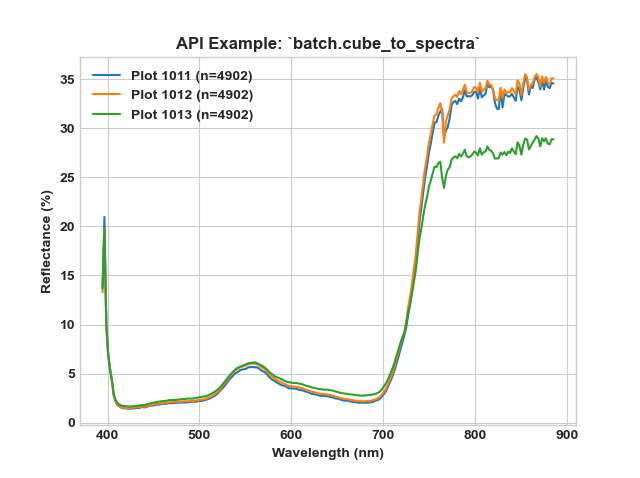
</dd></dl>

<dl class="method">
<dt id="hs_process.batch.segment_band_math">
<code class="sig-name descname">segment_band_math</code><span class="sig-paren">(</span><em class="sig-param">fname_list=None</em>, <em class="sig-param">base_dir=None</em>, <em class="sig-param">search_ext='bip'</em>, <em class="sig-param">dir_level=0</em>, <em class="sig-param">base_dir_out=None</em>, <em class="sig-param">folder_name='band_math'</em>, <em class="sig-param">name_append='band-math'</em>, <em class="sig-param">geotiff=True</em>, <em class="sig-param">method='ndi'</em>, <em class="sig-param">wl1=None</em>, <em class="sig-param">wl2=None</em>, <em class="sig-param">wl3=None</em>, <em class="sig-param">b1=None</em>, <em class="sig-param">b2=None</em>, <em class="sig-param">b3=None</em>, <em class="sig-param">list_range=True</em>, <em class="sig-param">plot_out=True</em>, <em class="sig-param">out_dtype=False</em>, <em class="sig-param">out_force=None</em>, <em class="sig-param">out_ext=False</em>, <em class="sig-param">out_interleave=False</em>, <em class="sig-param">out_byteorder=False</em><span class="sig-paren">)</span><a class="reference internal" href="../_modules/hs_process/batch.html#batch.segment_band_math"><span class="viewcode-link">[source]</span></a><a class="headerlink" href="#hs_process.batch.segment_band_math" title="Permalink to this definition">¶</a></dt>
<dd><p>Batch processing tool to perform band math on multiple datacubes in the
same way. <code class="docutils literal notranslate"><span class="pre">batch.segment_band_math</span></code> is typically used prior to
<code class="docutils literal notranslate"><span class="pre">batch.segment_create_mask</span></code> to generate the images/directory required
for the masking process.</p>
<dl class="field-list simple">
<dt class="field-odd">Parameters</dt>
<dd class="field-odd"><ul class="simple">
<li><p><strong>method</strong> (<code class="docutils literal notranslate"><span class="pre">str</span></code>) -- Must be one of &quot;ndi&quot; (normalized difference
index), &quot;ratio&quot; (simple ratio index), &quot;derivative&quot;
(deriviative-type index), or &quot;mcari2&quot; (modified chlorophyll
absorption index2). Indicates what kind of band math should be
performed on the input datacube. The &quot;ndi&quot; method leverages
<code class="docutils literal notranslate"><span class="pre">segment.band_math_ndi()</span></code>, the &quot;ratio&quot; method leverages
<code class="docutils literal notranslate"><span class="pre">segment.band_math_ratio()</span></code>, and the &quot;derivative&quot; method
leverages <code class="docutils literal notranslate"><span class="pre">segment.band_math_derivative()</span></code>. Please see the
<code class="docutils literal notranslate"><span class="pre">segment</span></code> documentation for more information (default:
&quot;ndi&quot;).</p></li>
<li><p><strong>wl1</strong> (<code class="docutils literal notranslate"><span class="pre">int</span></code>, <code class="docutils literal notranslate"><span class="pre">float</span></code>, or <code class="docutils literal notranslate"><span class="pre">list</span></code>) -- the wavelength (or set of
wavelengths) to be used as the first parameter of the
band math index; if <code class="docutils literal notranslate"><span class="pre">list</span></code>, then consolidates all
bands between two wavelength values by calculating the mean
pixel value across all bands in that range (default: <code class="docutils literal notranslate"><span class="pre">None</span></code>).</p></li>
<li><p><strong>wl2</strong> (<code class="docutils literal notranslate"><span class="pre">int</span></code>, <code class="docutils literal notranslate"><span class="pre">float</span></code>, or <code class="docutils literal notranslate"><span class="pre">list</span></code>) -- the wavelength (or set of
wavelengths) to be used as the second parameter of the
band math index; if <code class="docutils literal notranslate"><span class="pre">list</span></code>, then consolidates all
bands between two wavelength values by calculating the mean
pixel value across all bands in that range (default: <code class="docutils literal notranslate"><span class="pre">None</span></code>).</p></li>
<li><p><strong>b1</strong> (<code class="docutils literal notranslate"><span class="pre">int</span></code>, <code class="docutils literal notranslate"><span class="pre">float</span></code>, or <code class="docutils literal notranslate"><span class="pre">list</span></code>) -- the band (or set of bands) to be
used as the first parameter of the band math index;
if <code class="docutils literal notranslate"><span class="pre">list</span></code>, then consolidates all bands between two band values
by calculating the mean pixel value across all bands in that
range (default: <code class="docutils literal notranslate"><span class="pre">None</span></code>).</p></li>
<li><p><strong>b2</strong> (<code class="docutils literal notranslate"><span class="pre">int</span></code>, <code class="docutils literal notranslate"><span class="pre">float</span></code>, or <code class="docutils literal notranslate"><span class="pre">list</span></code>) -- the band (or set of bands) to be
used as the second parameter of the band math
index; if <code class="docutils literal notranslate"><span class="pre">list</span></code>, then consolidates all bands between two band
values by calculating the mean pixel value across all bands in
that range (default: <code class="docutils literal notranslate"><span class="pre">None</span></code>).</p></li>
<li><p><strong>list_range</strong> (<code class="docutils literal notranslate"><span class="pre">bool</span></code>) -- Whether bands/wavelengths passed as a list is
interpreted as a range of bands (<code class="docutils literal notranslate"><span class="pre">True</span></code>) or for each individual
band in the list (<code class="docutils literal notranslate"><span class="pre">False</span></code>). If <code class="docutils literal notranslate"><span class="pre">list_range</span></code> is <code class="docutils literal notranslate"><span class="pre">True</span></code>,
<code class="docutils literal notranslate"><span class="pre">b1</span></code>/<code class="docutils literal notranslate"><span class="pre">wl1</span></code> and <code class="docutils literal notranslate"><span class="pre">b2</span></code>/<code class="docutils literal notranslate"><span class="pre">wl2</span></code> should be lists with two items, and
all bands/wavelegths between the two values will be used
(default: <code class="docutils literal notranslate"><span class="pre">True</span></code>).</p></li>
<li><p><strong>plot_out</strong> (<code class="docutils literal notranslate"><span class="pre">bool</span></code>) -- whether to save a histogram of the band math
result (default: <code class="docutils literal notranslate"><span class="pre">True</span></code>).</p></li>
<li><p><strong>geotiff</strong> (<code class="docutils literal notranslate"><span class="pre">bool</span></code>) -- whether to save the masked RGB image as a geotiff
alongside the masked datacube.</p></li>
</ul>
</dd>
</dl>
<div class="admonition note">
<p class="admonition-title">Note</p>
<p>The following <code class="docutils literal notranslate"><span class="pre">batch</span></code> example builds on the API example results
of the <a class="reference external" href="hs_process.spatial_mod.html#hs_process.spatial_mod.crop_many_gdf">spatial_mod.crop_many_gdf</a> function. Please complete the
<a class="reference external" href="hs_process.spatial_mod.html#hs_process.spatial_mod.crop_many_gdf">spatial_mod.crop_many_gdf</a> example to be sure your directory
(i.e., <code class="docutils literal notranslate"><span class="pre">base_dir</span></code>) is populated with multiple hyperspectral
datacubes. The following example will be using datacubes located in
the following directory:
<code class="docutils literal notranslate"><span class="pre">F:\nigo0024\Documents\hs_process_demo\spatial_mod\crop_many_gdf</span></code></p>
</div>
<p class="rubric">Example</p>
<p>Load and initialize the <code class="docutils literal notranslate"><span class="pre">batch</span></code> module, checking to be sure the
directory exists.</p>
<div class="highlight-default notranslate"><div class="highlight"><pre><span></span><span class="gp">&gt;&gt;&gt; </span><span class="kn">import</span> <span class="nn">os</span>
<span class="gp">&gt;&gt;&gt; </span><span class="kn">from</span> <span class="nn">hs_process</span> <span class="k">import</span> <span class="n">batch</span>
<span class="gp">&gt;&gt;&gt; </span><span class="n">base_dir</span> <span class="o">=</span> <span class="sa">r</span><span class="s1">&#39;F:\nigo0024\Documents\hs_process_demo\spatial_mod\crop_many_gdf&#39;</span>
<span class="gp">&gt;&gt;&gt; </span><span class="nb">print</span><span class="p">(</span><span class="n">os</span><span class="o">.</span><span class="n">path</span><span class="o">.</span><span class="n">isdir</span><span class="p">(</span><span class="n">base_dir</span><span class="p">))</span>
<span class="go">True</span>
<span class="gp">&gt;&gt;&gt; </span><span class="n">hsbatch</span> <span class="o">=</span> <span class="n">batch</span><span class="p">(</span><span class="n">base_dir</span><span class="p">,</span> <span class="n">search_ext</span><span class="o">=</span><span class="s1">&#39;.bip&#39;</span><span class="p">)</span>  <span class="c1"># searches for all files in ``base_dir`` with a &quot;.bip&quot; file extension</span>
</pre></div>
</div>
<p>Use <code class="docutils literal notranslate"><span class="pre">batch.segment_band_math</span></code> to compute the MCARI2 (Modified
Chlorophyll Absorption Ratio Index Improved; Haboudane et al.,
2004) spectral index for each of the datacubes in <code class="docutils literal notranslate"><span class="pre">base_dir</span></code>. See
<a class="reference external" href="https://www.harrisgeospatial.com/docs/NarrowbandGreenness.html#Modified3">Harris Geospatial</a> for more information about the MCARI2 spectral
index and references to other spectral indices.</p>
<div class="highlight-default notranslate"><div class="highlight"><pre><span></span><span class="gp">&gt;&gt;&gt; </span><span class="n">folder_name</span> <span class="o">=</span> <span class="s1">&#39;band_math_mcari2-800-670-550&#39;</span>  <span class="c1"># folder name can be modified to be more descriptive in what type of band math is being performed</span>
<span class="gp">&gt;&gt;&gt; </span><span class="n">method</span> <span class="o">=</span> <span class="s1">&#39;mcari2&#39;</span>  <span class="c1"># must be one of &quot;ndi&quot;, &quot;ratio&quot;, &quot;derivative&quot;, or &quot;mcari2&quot;</span>
<span class="gp">&gt;&gt;&gt; </span><span class="n">wl1</span> <span class="o">=</span> <span class="mi">800</span>
<span class="gp">&gt;&gt;&gt; </span><span class="n">wl2</span> <span class="o">=</span> <span class="mi">670</span>
<span class="gp">&gt;&gt;&gt; </span><span class="n">wl3</span> <span class="o">=</span> <span class="mi">550</span>
<span class="gp">&gt;&gt;&gt; </span><span class="n">hsbatch</span><span class="o">.</span><span class="n">segment_band_math</span><span class="p">(</span><span class="n">base_dir</span><span class="o">=</span><span class="n">base_dir</span><span class="p">,</span> <span class="n">folder_name</span><span class="o">=</span><span class="n">folder_name</span><span class="p">,</span>
<span class="go">                              name_append=&#39;band-math&#39;, geotiff=True,</span>
<span class="go">                              method=method, wl1=wl1, wl2=wl2, wl3=wl3,</span>
<span class="go">                              plot_out=True, out_force=True)</span>
<span class="go">Bands used (``b1``): [198]</span>
<span class="go">Bands used (``b2``): [135]</span>
<span class="go">Bands used (``b3``): [77]</span>
<span class="go">Wavelengths used (``b1``): [799.0016]</span>
<span class="go">Wavelengths used (``b2``): [669.6752]</span>
<span class="go">Wavelengths used (``b3``): [550.6128]</span>
<span class="go">Saving F:\nigo0024\Documents\hs_process_demo\spatial_mod\crop_many_gdfand_math_mcari2-800-670-550\Wells_rep2_20180628_16h56m_pika_gige_7_plot_1011-band-math-mcari2-800-670-550.bip</span>
<span class="gp">...</span>
</pre></div>
</div>
<p><code class="docutils literal notranslate"><span class="pre">batch.segment_band_math</span></code> creates a new folder in <code class="docutils literal notranslate"><span class="pre">base_dir</span></code>
(in this case the new directory is
<code class="docutils literal notranslate"><span class="pre">F:\nigo0024\Documents\hs_process_demo\spatial_mod\crop_many_gdfand_math_mcari2-800-670-550</span></code>)
which contains several data products. The <strong>first</strong> is
<code class="docutils literal notranslate"><span class="pre">band-math-stats.csv</span></code>: a spreadsheet containing summary
statistics for each of the image cubes that were processed via
<code class="docutils literal notranslate"><span class="pre">batch.segment_band_math</span></code>; stats include <em>pixel count</em>,
<em>mean</em>, <em>standard deviation</em>, <em>median</em>, and <em>percentiles</em> across
all image pixels.</p>
<p><strong>Second</strong> is a <code class="docutils literal notranslate"><span class="pre">geotiff</span></code> file for each of the image cubes after the
band math processing. This can be opened in <em>QGIS</em> to visualize in
a spatial reference system, or can be opened using any software
that supports floating point <em>.tif</em> files.</p>
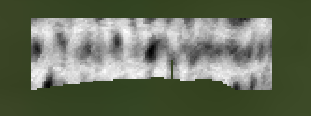
<p><strong>Third</strong> is the band math raster saved in the <em>.hdr</em> file format.
Note that the data conained here should be the same as in the
<em>.tif</em> file, so it's a matter of preference as to what may be more
useful. This single band <em>.hdr</em> can also be opend in <em>QGIS</em>.</p>
<p><strong>Fourth</strong> is a histogram of the band math data contained in the
image. The histogram illustrates the 90th percentile value, which
may be useful for in the segmentation step (e.g., see
<a class="reference external" href="hs_process.batch.html#hs_process.batch.segment_create_mask">batch.segment_create_mask</a>).</p>

</dd></dl>

<dl class="method">
<dt id="hs_process.batch.segment_create_mask">
<code class="sig-name descname">segment_create_mask</code><span class="sig-paren">(</span><em class="sig-param">fname_list=None</em>, <em class="sig-param">base_dir=None</em>, <em class="sig-param">search_ext='bip'</em>, <em class="sig-param">dir_level=0</em>, <em class="sig-param">mask_dir=None</em>, <em class="sig-param">base_dir_out=None</em>, <em class="sig-param">folder_name='mask'</em>, <em class="sig-param">name_append='mask'</em>, <em class="sig-param">geotiff=True</em>, <em class="sig-param">mask_thresh=None</em>, <em class="sig-param">mask_percentile=None</em>, <em class="sig-param">mask_side='lower'</em>, <em class="sig-param">out_dtype=False</em>, <em class="sig-param">out_force=None</em>, <em class="sig-param">out_ext=False</em>, <em class="sig-param">out_interleave=False</em>, <em class="sig-param">out_byteorder=False</em><span class="sig-paren">)</span><a class="reference internal" href="../_modules/hs_process/batch.html#batch.segment_create_mask"><span class="viewcode-link">[source]</span></a><a class="headerlink" href="#hs_process.batch.segment_create_mask" title="Permalink to this definition">¶</a></dt>
<dd><p>Batch processing tool to create a masked array on many datacubes.
<code class="docutils literal notranslate"><span class="pre">batch.segment_create_mask</span></code> is typically used after
<code class="docutils literal notranslate"><span class="pre">batch.segment_band_math</span></code> to mask all the datacubes in a directory
based on the result of the band math process.</p>
<dl class="field-list simple">
<dt class="field-odd">Parameters</dt>
<dd class="field-odd"><ul class="simple">
<li><p><strong>mask_thresh</strong> (<code class="docutils literal notranslate"><span class="pre">float</span></code> or <code class="docutils literal notranslate"><span class="pre">int</span></code>) -- The value for which to mask the
array; should be used with <code class="docutils literal notranslate"><span class="pre">side</span></code> parameter (default: <code class="docutils literal notranslate"><span class="pre">None</span></code>).</p></li>
<li><p><strong>mask_percentile</strong> (<code class="docutils literal notranslate"><span class="pre">float</span></code> or <code class="docutils literal notranslate"><span class="pre">int</span></code>) -- The percentile of pixels to
mask; if <code class="docutils literal notranslate"><span class="pre">percentile``=95</span> <span class="pre">and</span> <span class="pre">``side``='lower',</span> <span class="pre">the</span> <span class="pre">lowest</span> <span class="pre">95%</span> <span class="pre">of</span>
<span class="pre">pixels</span> <span class="pre">will</span> <span class="pre">be</span> <span class="pre">masked</span> <span class="pre">following</span> <span class="pre">the</span> <span class="pre">band</span> <span class="pre">math</span> <span class="pre">operation</span>
<span class="pre">(default:</span> <span class="pre">``None</span></code>; range: 0-100).</p></li>
<li><p><strong>mask_side</strong> (<code class="docutils literal notranslate"><span class="pre">str</span></code>) -- The side of the threshold or percentile for
which to apply the mask. Must be either 'lower' or 'upper'; if
'lower', everything below the threshold/percentile will be
masked (default: 'lower').</p></li>
<li><p><strong>geotiff</strong> (<code class="docutils literal notranslate"><span class="pre">bool</span></code>) -- whether to save the masked RGB image as a geotiff
alongside the masked datacube.</p></li>
</ul>
</dd>
</dl>
<div class="admonition note">
<p class="admonition-title">Note</p>
<p>The following <code class="docutils literal notranslate"><span class="pre">batch</span></code> example builds on the API example results
of <a class="reference external" href="hs_process.spatial_mod.html#hs_process.spatial_mod.crop_many_gdf">spatial_mod.crop_many_gdf</a> and <a class="reference external" href="hs_process.batch.html#hs_process.batch.segment_band_math">batch.segment_band_math</a>.
Please complete each of those API examples to be sure your
directories (i.e., <code class="docutils literal notranslate"><span class="pre">base_dir</span></code>, and <code class="docutils literal notranslate"><span class="pre">mask_dir</span></code>) are populated
with image files. The following example will be masking datacubes
located in:
<code class="docutils literal notranslate"><span class="pre">F:\nigo0024\Documents\hs_process_demo\spatial_mod\crop_many_gdf</span></code>
based on MCARI2 images located in:
<code class="docutils literal notranslate"><span class="pre">F:\nigo0024\Documents\hs_process_demo\spatial_mod\crop_many_gdf\band_math_mcari2-800-670-550</span></code></p>
</div>
<p class="rubric">Example</p>
<p>Load and initialize the <code class="docutils literal notranslate"><span class="pre">batch</span></code> module, ensuring <code class="docutils literal notranslate"><span class="pre">base_dir</span></code> is
a valid directory</p>
<div class="highlight-default notranslate"><div class="highlight"><pre><span></span><span class="gp">&gt;&gt;&gt; </span><span class="kn">import</span> <span class="nn">os</span>
<span class="gp">&gt;&gt;&gt; </span><span class="kn">from</span> <span class="nn">hs_process</span> <span class="k">import</span> <span class="n">batch</span>
<span class="gp">&gt;&gt;&gt; </span><span class="n">base_dir</span> <span class="o">=</span> <span class="sa">r</span><span class="s1">&#39;F:\nigo0024\Documents\hs_process_demo\spatial_mod\crop_many_gdf&#39;</span>
<span class="gp">&gt;&gt;&gt; </span><span class="nb">print</span><span class="p">(</span><span class="n">os</span><span class="o">.</span><span class="n">path</span><span class="o">.</span><span class="n">isdir</span><span class="p">(</span><span class="n">base_dir</span><span class="p">))</span>
<span class="go">True</span>
<span class="gp">&gt;&gt;&gt; </span><span class="n">hsbatch</span> <span class="o">=</span> <span class="n">batch</span><span class="p">(</span><span class="n">base_dir</span><span class="p">,</span> <span class="n">search_ext</span><span class="o">=</span><span class="s1">&#39;.bip&#39;</span><span class="p">)</span>  <span class="c1"># searches for all files in ``base_dir`` with a &quot;.bip&quot; file extension</span>
</pre></div>
</div>
<p>There must be a single-band image that will be used to determine
which datacube pixels are to be masked (determined via the
<code class="docutils literal notranslate"><span class="pre">mask_dir</span></code> parameter). Point to the directory that contains the
MCARI2 images.</p>
<div class="highlight-default notranslate"><div class="highlight"><pre><span></span><span class="gp">&gt;&gt;&gt; </span><span class="n">mask_dir</span> <span class="o">=</span> <span class="n">os</span><span class="o">.</span><span class="n">path</span><span class="o">.</span><span class="n">join</span><span class="p">(</span><span class="n">base_dir</span><span class="p">,</span> <span class="s1">&#39;band_math_mcari2-800-670-550&#39;</span><span class="p">)</span>
<span class="gp">&gt;&gt;&gt; </span><span class="nb">print</span><span class="p">(</span><span class="n">os</span><span class="o">.</span><span class="n">path</span><span class="o">.</span><span class="n">isdir</span><span class="p">(</span><span class="n">mask_dir</span><span class="p">))</span>
<span class="go">True</span>
</pre></div>
</div>
<p>Indicate how the MCARI2 images should be used to determine which
hyperspectal pixels are to be masked. The available parameters for
controlling this are <code class="docutils literal notranslate"><span class="pre">mask_thresh</span></code>, <code class="docutils literal notranslate"><span class="pre">mask_percentile</span></code>, and
<code class="docutils literal notranslate"><span class="pre">mask_side</span></code>. We will mask out all pixels that fall below the
MCARI2 90th percentile.</p>
<div class="highlight-default notranslate"><div class="highlight"><pre><span></span><span class="gp">&gt;&gt;&gt; </span><span class="n">mask_percentile</span> <span class="o">=</span> <span class="mi">90</span>
<span class="gp">&gt;&gt;&gt; </span><span class="n">mask_side</span> <span class="o">=</span> <span class="s1">&#39;lower&#39;</span>
</pre></div>
</div>
<p>Finally, indicate the folder to save the masked datacubes and
perform the batch masking via <code class="docutils literal notranslate"><span class="pre">batch.segment_create_mask</span></code></p>
<div class="highlight-default notranslate"><div class="highlight"><pre><span></span><span class="gp">&gt;&gt;&gt; </span><span class="n">folder_name</span> <span class="o">=</span> <span class="s1">&#39;mask_mcari2_90th&#39;</span>
<span class="gp">&gt;&gt;&gt; </span><span class="n">hsbatch</span><span class="o">.</span><span class="n">segment_create_mask</span><span class="p">(</span><span class="n">base_dir</span><span class="o">=</span><span class="n">base_dir</span><span class="p">,</span> <span class="n">mask_dir</span><span class="o">=</span><span class="n">mask_dir</span><span class="p">,</span>
<span class="go">                                folder_name=folder_name,</span>
<span class="go">                                name_append=&#39;mask-mcari2-90th&#39;, geotiff=True,</span>
<span class="go">                                mask_percentile=mask_percentile,</span>
<span class="go">                                mask_side=mask_side)</span>
<span class="go">Saving F:\nigo0024\Documents\hs_process_demo\spatial_mod\crop_many_gdf\mask_mcari2_90th\Wells_rep2_20180628_16h56m_pika_gige_7_plot_1011-mask-mcari2-90th.bip</span>
<span class="go">Saving F:\nigo0024\Documents\hs_process_demo\spatial_mod\crop_many_gdf\mask_mcari2_90th\Wells_rep2_20180628_16h56m_pika_gige_7_plot_1011-mask-mcari2-90th-spec-mean.spec</span>
<span class="gp">...</span>
</pre></div>
</div>
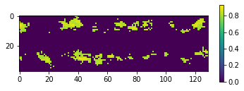
<p><code class="docutils literal notranslate"><span class="pre">batch.segment_create_mask</span></code> creates a new folder in <code class="docutils literal notranslate"><span class="pre">base_dir</span></code>
named according to the <code class="docutils literal notranslate"><span class="pre">folder_name</span></code> parameter
(in this case the new directory is
<code class="docutils literal notranslate"><span class="pre">F:\nigo0024\Documents\hs_process_demo\spatial_mod\crop_many_gdf\mask_mcari2_90th</span></code>)
which contains several data products. The <strong>first</strong> is
<code class="docutils literal notranslate"><span class="pre">mask-stats.csv</span></code>: a spreadsheet containing the band math
threshold value for each image file. In this example, the MCARI2
value corresponding to the 90th percentile is listed.</p>
<table class="docutils align-default">
<colgroup>
<col style="width: 32%" />
<col style="width: 32%" />
<col style="width: 35%" />
</colgroup>
<thead>
<tr class="row-odd"><th class="head"><p>fname</p></th>
<th class="head"><p>plot_id</p></th>
<th class="head"><p>lower-pctl-90</p></th>
</tr>
</thead>
<tbody>
<tr class="row-even"><td><p>...</p></td>
<td><p>1011</p></td>
<td><p>0.83341</p></td>
</tr>
<tr class="row-odd"><td><p>...</p></td>
<td><p>1012</p></td>
<td><p>0.81117</p></td>
</tr>
<tr class="row-even"><td><p>...</p></td>
<td><p>1013</p></td>
<td><p>0.75025</p></td>
</tr>
</tbody>
</table>
<p>...etc.</p>
<p><strong>Second</strong> is a <code class="docutils literal notranslate"><span class="pre">geotiff</span></code> file for each of the image cubes after the
masking procedure. This can be opened in <em>QGIS</em> to visualize in
a spatial reference system, or can be opened using any software
that supports floating point <em>.tif</em> files. The masked pixels are
saved as <code class="docutils literal notranslate"><span class="pre">null</span></code> values and should render transparently.</p>
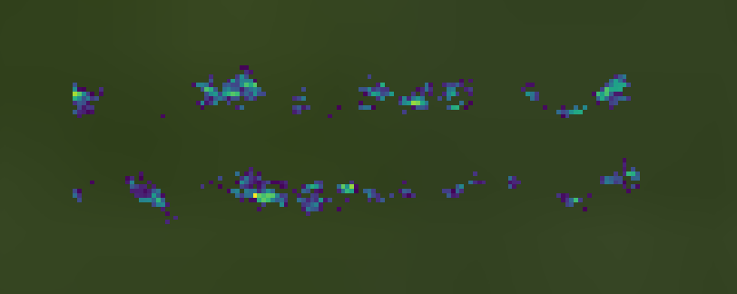
<p><strong>Third</strong> is the full hyperspectral datacube, also with the masked
pixels saved as <code class="docutils literal notranslate"><span class="pre">null</span></code> values. Note that the only pixels
remaining are the 10% with the highest MCARI2 values.</p>
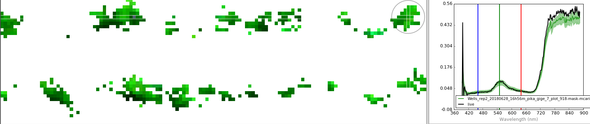
<p><strong>Fourth</strong> is the mean spectra across the unmasked datacube pixels.
This is illustrated above by the green plot (the light green shadow
represents the standard deviation for each band).</p>
</dd></dl>

<dl class="method">
<dt id="hs_process.batch.spatial_crop">
<code class="sig-name descname">spatial_crop</code><span class="sig-paren">(</span><em class="sig-param">fname_sheet=None</em>, <em class="sig-param">base_dir=None</em>, <em class="sig-param">search_ext='bip'</em>, <em class="sig-param">dir_level=0</em>, <em class="sig-param">base_dir_out=None</em>, <em class="sig-param">folder_name='spatial_crop'</em>, <em class="sig-param">name_append='spatial-crop'</em>, <em class="sig-param">geotiff=True</em>, <em class="sig-param">method='single'</em>, <em class="sig-param">gdf=None</em>, <em class="sig-param">out_dtype=False</em>, <em class="sig-param">out_force=None</em>, <em class="sig-param">out_ext=False</em>, <em class="sig-param">out_interleave=False</em>, <em class="sig-param">out_byteorder=False</em><span class="sig-paren">)</span><a class="reference internal" href="../_modules/hs_process/batch.html#batch.spatial_crop"><span class="viewcode-link">[source]</span></a><a class="headerlink" href="#hs_process.batch.spatial_crop" title="Permalink to this definition">¶</a></dt>
<dd><p>Iterates through spreadsheet that provides necessary information about
how each image should be cropped and how it should be saved.</p>
<p>If <code class="docutils literal notranslate"><span class="pre">gdf</span></code> is passed (a geopandas.GoeDataFrame polygon file), the
cropped images will be shifted to the center of appropriate &quot;plot&quot;
polygon.</p>
<dl class="field-list simple">
<dt class="field-odd">Parameters</dt>
<dd class="field-odd"><ul class="simple">
<li><p><strong>fname_sheet</strong> (<code class="docutils literal notranslate"><span class="pre">fname</span></code>, <code class="docutils literal notranslate"><span class="pre">pandas.DataFrame</span></code>, or <code class="docutils literal notranslate"><span class="pre">None</span></code>, optional) -- The filename of the spreadsheed that provides the
necessary information for fine-tuning the batch process
cropping. See below for more information about the required and
optional contents of <code class="docutils literal notranslate"><span class="pre">fname_sheet</span></code> and how to properly format
it. Optionally, <code class="docutils literal notranslate"><span class="pre">fname_sheet</span></code> can be a <code class="docutils literal notranslate"><span class="pre">Pandas.DataFrame</span></code>.
If left to <code class="docutils literal notranslate"><span class="pre">None</span></code>, <code class="docutils literal notranslate"><span class="pre">base_dir</span></code> and <code class="docutils literal notranslate"><span class="pre">gdf</span></code> must be passed.</p></li>
<li><p><strong>base_dir</strong> (<code class="docutils literal notranslate"><span class="pre">str</span></code>, optional) -- directory path to search for files to
spatially crop; if <code class="docutils literal notranslate"><span class="pre">fname_sheet</span></code> is not <code class="docutils literal notranslate"><span class="pre">None</span></code>,
<code class="docutils literal notranslate"><span class="pre">base_dir</span></code> will be ignored (default: <code class="docutils literal notranslate"><span class="pre">None</span></code>).</p></li>
<li><p><strong>base_dir_out</strong> (<code class="docutils literal notranslate"><span class="pre">str</span></code>, optional) -- output directory of the cropped
image (default: <code class="docutils literal notranslate"><span class="pre">None</span></code>).</p></li>
<li><p><strong>folder_name</strong> (<code class="docutils literal notranslate"><span class="pre">str</span></code>, optional) -- folder to add to <code class="docutils literal notranslate"><span class="pre">base_dir_out</span></code>
to save all the processed datacubes (default: 'spatial_crop').</p></li>
<li><p><strong>name_append</strong> (<code class="docutils literal notranslate"><span class="pre">str</span></code>, optional) -- name to append to the filename
(default: 'spatial-crop').</p></li>
<li><p><strong>geotiff</strong> (<code class="docutils literal notranslate"><span class="pre">bool</span></code>, optional) -- whether to save an RGB image as a
geotiff alongside the cropped datacube.</p></li>
<li><p><strong>method</strong> (<code class="docutils literal notranslate"><span class="pre">str</span></code>, optional) -- Must be one of &quot;single&quot; or
&quot;many_gdf&quot;. Indicates whether a single plot should be cropped
from the input datacube or if many/multiple plots should be
cropped from the input datacube. The &quot;single&quot; method leverages
<a class="reference external" href="hs_process.spatial_mod.html#hs_process.spatial_mod.crop_single">spatial_mod.crop_single()</a> and the &quot;many_gdf&quot; method
leverages <a class="reference external" href="hs_process.spatial_mod.html#hs_process.spatial_mod.crop_many_gdf">spatial_mod.crop_many_gdf()</a>. Please
see the <code class="docutils literal notranslate"><span class="pre">spatial_mod</span></code> documentation for more information
(default: &quot;single&quot;).</p></li>
<li><p><strong>gdf</strong> (<code class="docutils literal notranslate"><span class="pre">geopandas.GeoDataFrame</span></code>, optional) -- the plot names and
polygon geometery of each of the plots; 'plot' must be used as
a column name to identify each of the plots, and should be an
integer.</p></li>
<li><p><strong>out_XXX</strong> -- Settings for saving the output files can be adjusted here
if desired. They are stored in <code class="docutils literal notranslate"><span class="pre">batch.io.defaults</span></code>, and are
therefore accessible at a high level. See
<a class="reference external" href="hs_process.hsio.html#hs_process.hsio.set_io_defaults">hsio.set_io_defaults()</a> for more information on each of the
settings.</p></li>
</ul>
</dd>
</dl>
<p><strong>Tips and Tricks for</strong> <code class="docutils literal notranslate"><span class="pre">fname_sheet</span></code> <strong>when</strong> <code class="docutils literal notranslate"><span class="pre">gdf</span></code> <strong>is not passed</strong></p>
<p>If <code class="docutils literal notranslate"><span class="pre">gdf</span></code> is not passed, <code class="docutils literal notranslate"><span class="pre">fname_sheet</span></code> may have the following
required column headings that correspond to the relevant parameters in
<a class="reference external" href="hs_process.spatial_mod.html#hs_process.spatial_mod.crop_single">spatial_mod.crop_single()</a> and <a class="reference external" href="hs_process.spatial_mod.html#hs_process.spatial_mod.crop_many_gdf">spatial_mod.crop_many_gdf()</a>:</p>
<ol class="arabic simple">
<li><p>&quot;directory&quot;</p></li>
<li><p>&quot;name_short&quot;</p></li>
<li><p>&quot;name_long&quot;</p></li>
<li><p>&quot;ext&quot;</p></li>
<li><p>&quot;pix_e_ul&quot;</p></li>
<li><p>&quot;pix_n_ul&quot;.</p></li>
</ol>
<p>With this minimum input, <code class="docutils literal notranslate"><span class="pre">batch.spatial_crop</span></code> will read in each
image, crop from the upper left pixel (determined as
<code class="docutils literal notranslate"><span class="pre">pix_e_ul</span></code>/<code class="docutils literal notranslate"><span class="pre">pix_n_ul</span></code>) to the lower right pixel calculated
based on <code class="docutils literal notranslate"><span class="pre">crop_e_pix</span></code>/<code class="docutils literal notranslate"><span class="pre">crop_n_pix</span></code> (which is the width of the
cropped area in units of pixels).</p>
<div class="admonition note">
<p class="admonition-title">Note</p>
<p><code class="docutils literal notranslate"><span class="pre">crop_e_pix</span></code> and <code class="docutils literal notranslate"><span class="pre">crop_n_pix</span></code> have default values (see
<a class="reference external" href="hs_process.defaults.html#hs_process.defaults.crop_defaults">defaults.crop_defaults()</a>), but they can also be passed
specifically for each datacube by including appropriate columns in
<code class="docutils literal notranslate"><span class="pre">fname_sheet</span></code> (which takes precedence over
<code class="docutils literal notranslate"><span class="pre">defaults.crop_defaults</span></code>).</p>
</div>
<p><code class="docutils literal notranslate"><span class="pre">fname_sheet</span></code> may also have the following optional column headings:</p>
<ol class="arabic simple">
<li><p>&quot;crop_e_pix&quot;</p></li>
<li><p>&quot;crop_n_pix&quot;</p></li>
<li><p>&quot;crop_e_m&quot;</p></li>
<li><p>&quot;crop_n_m&quot;</p></li>
<li><p>&quot;buf_e_pix&quot;</p></li>
<li><p>&quot;buf_n_pix&quot;</p></li>
<li><p>&quot;buf_e_m&quot;</p></li>
<li><p>&quot;buf_n_m&quot;</p></li>
<li><p>&quot;plot_id&quot;</p></li>
</ol>
<p><strong>More</strong> <code class="docutils literal notranslate"><span class="pre">fname_sheet</span></code> <strong>Tips and Tricks</strong></p>
<ol class="arabic simple">
<li><p>These optional inputs passed via <code class="docutils literal notranslate"><span class="pre">fname_sheet</span></code> allow more control
over exactly how the images are to be cropped. For a more detailed
explanation of the information that many of these columns are
intended to contain, see the documentation for
<a class="reference external" href="hs_process.spatial_mod.html#hs_process.spatial_mod.crop_single">spatial_mod.crop_single()</a> and <a class="reference external" href="hs_process.spatial_mod.html#hs_process.spatial_mod.crop_many_gdf">spatial_mod.crop_many_gdf()</a>.
Those parameters not referenced should be apparent in the API
examples and tutorials.</p></li>
<li><p>If the column names are different in <code class="docutils literal notranslate"><span class="pre">fname_sheet</span></code> than described
here, <a class="reference external" href="hs_process.defaults.html#hs_process.defaults.spat_crop_cols">defaults.spat_crop_cols()</a> can be modified to indicate which
columns correspond to the relevant information.</p></li>
<li><p>Any other columns can be added to <code class="docutils literal notranslate"><span class="pre">fname_sheet</span></code>, but
<code class="docutils literal notranslate"><span class="pre">batch.spatial_crop()</span></code> does not use them in any way.</p></li>
</ol>
<div class="admonition note">
<p class="admonition-title">Note</p>
<p>The following <code class="docutils literal notranslate"><span class="pre">batch</span></code> example only actually processes <em>a single</em>
hyperspectral image. If more datacubes were present in
<code class="docutils literal notranslate"><span class="pre">base_dir</span></code>, however, <code class="docutils literal notranslate"><span class="pre">batch.spatial_crop</span></code> would process all
datacubes that were available.</p>
</div>
<div class="admonition note">
<p class="admonition-title">Note</p>
<p>This example will uses <code class="docutils literal notranslate"><span class="pre">spatial_mod.crop_many_gdf</span></code> to crop many
plots from a datacube using a polygon geometry file describing the
spatial extent of each plot.</p>
</div>
<p class="rubric">Example</p>
<p>Load and initialize the <code class="docutils literal notranslate"><span class="pre">batch</span></code> module, checking to be sure the
directory exists.</p>
<div class="highlight-default notranslate"><div class="highlight"><pre><span></span><span class="gp">&gt;&gt;&gt; </span><span class="kn">import</span> <span class="nn">os</span>
<span class="gp">&gt;&gt;&gt; </span><span class="kn">import</span> <span class="nn">geopandas</span> <span class="k">as</span> <span class="nn">gpd</span>
<span class="gp">&gt;&gt;&gt; </span><span class="kn">import</span> <span class="nn">pandas</span> <span class="k">as</span> <span class="nn">pd</span>
<span class="gp">&gt;&gt;&gt; </span><span class="kn">from</span> <span class="nn">hs_process</span> <span class="k">import</span> <span class="n">batch</span>
<span class="gp">&gt;&gt;&gt; </span><span class="n">base_dir</span> <span class="o">=</span> <span class="sa">r</span><span class="s1">&#39;F:\nigo0024\Documents\hs_process_demo&#39;</span>
<span class="gp">&gt;&gt;&gt; </span><span class="nb">print</span><span class="p">(</span><span class="n">os</span><span class="o">.</span><span class="n">path</span><span class="o">.</span><span class="n">isdir</span><span class="p">(</span><span class="n">base_dir</span><span class="p">))</span>
<span class="go">True</span>
<span class="gp">&gt;&gt;&gt; </span><span class="n">hsbatch</span> <span class="o">=</span> <span class="n">batch</span><span class="p">(</span><span class="n">base_dir</span><span class="p">,</span> <span class="n">search_ext</span><span class="o">=</span><span class="s1">&#39;.bip&#39;</span><span class="p">,</span> <span class="n">dir_level</span><span class="o">=</span><span class="mi">0</span><span class="p">)</span>  <span class="c1"># searches for all files in ``base_dir`` with a &quot;.bip&quot; file extension</span>
</pre></div>
</div>
<p>Load the plot geometry as a <code class="docutils literal notranslate"><span class="pre">geopandas.GeoDataFrame</span></code></p>
<div class="highlight-default notranslate"><div class="highlight"><pre><span></span><span class="gp">&gt;&gt;&gt; </span><span class="n">fname_gdf</span> <span class="o">=</span> <span class="sa">r</span><span class="s1">&#39;F:\nigo0024\Documents\hs_process_demo\plot_bounds_small\plot_bounds.shp&#39;</span>
<span class="gp">&gt;&gt;&gt; </span><span class="n">gdf</span> <span class="o">=</span> <span class="n">gpd</span><span class="o">.</span><span class="n">read_file</span><span class="p">(</span><span class="n">fname_gdf</span><span class="p">)</span>
</pre></div>
</div>
<p>Perform the spatial cropping using the <em>&quot;many_gdf&quot;</em> <code class="docutils literal notranslate"><span class="pre">method</span></code>.
Note that nothing is being bassed to <code class="docutils literal notranslate"><span class="pre">fname_sheet</span></code> here, so
<code class="docutils literal notranslate"><span class="pre">batch.spatial_crop</span></code> is simply going to attempt to crop all plots
contained within <code class="docutils literal notranslate"><span class="pre">gdf</span></code> that overlap with any datacubes in
<code class="docutils literal notranslate"><span class="pre">base_dir</span></code>. This option does not allow for any flexibility
regarding minor adjustments to the cropping procedure (e.g.,
offset to the plot location in the datacube relative to the
location in the <code class="docutils literal notranslate"><span class="pre">gdf</span></code>), but it is the most straightforward way to
run <code class="docutils literal notranslate"><span class="pre">batch.spatial_crop</span></code> because it does not depend on anything
to be passed to <code class="docutils literal notranslate"><span class="pre">fname_sheet</span></code>. It does, however, allow you to
adjust the plot buffer relative to <code class="docutils literal notranslate"><span class="pre">gdf</span></code> via
<code class="docutils literal notranslate"><span class="pre">hsbatch.io.defaults.crop_defaults</span></code></p>
<div class="highlight-default notranslate"><div class="highlight"><pre><span></span><span class="gp">&gt;&gt;&gt; </span><span class="n">hsbatch</span><span class="o">.</span><span class="n">io</span><span class="o">.</span><span class="n">defaults</span><span class="o">.</span><span class="n">crop_defaults</span><span class="o">.</span><span class="n">buf_e_m</span> <span class="o">=</span> <span class="mi">2</span>
<span class="gp">&gt;&gt;&gt; </span><span class="n">hsbatch</span><span class="o">.</span><span class="n">io</span><span class="o">.</span><span class="n">defaults</span><span class="o">.</span><span class="n">crop_defaults</span><span class="o">.</span><span class="n">buf_n_m</span> <span class="o">=</span> <span class="mf">0.5</span>
<span class="gp">&gt;&gt;&gt; </span><span class="n">hsbatch</span><span class="o">.</span><span class="n">io</span><span class="o">.</span><span class="n">set_io_defaults</span><span class="p">(</span><span class="n">force</span><span class="o">=</span><span class="kc">True</span><span class="p">)</span>
<span class="gp">&gt;&gt;&gt; </span><span class="n">hsbatch</span><span class="o">.</span><span class="n">spatial_crop</span><span class="p">(</span><span class="n">base_dir</span><span class="o">=</span><span class="n">base_dir</span><span class="p">,</span> <span class="n">method</span><span class="o">=</span><span class="s1">&#39;many_gdf&#39;</span><span class="p">,</span>
<span class="go">                         gdf=gdf)</span>
<span class="go">Spatially cropping: F:\nigo0024\Documents\hs_process_demo\Wells_rep2_20180628_16h56m_pika_gige_7-Radiance Conversion-Georectify Airborne Datacube-Convert Radiance Cube to Reflectance from Measured Reference Spectrum.bip</span>
<span class="go">Saving F:\nigo0024\Documents\hs_process_demo\spatial_crop\Wells_rep2_20180628_16h56m_pika_gige_7_1018-spatial-crop.bip</span>
<span class="go">Spatially cropping: F:\nigo0024\Documents\hs_process_demo\Wells_rep2_20180628_16h56m_pika_gige_7-Radiance Conversion-Georectify Airborne Datacube-Convert Radiance Cube to Reflectance from Measured Reference Spectrum.bip</span>
<span class="go">Saving F:\nigo0024\Documents\hs_process_demo\spatial_crop\Wells_rep2_20180628_16h56m_pika_gige_7_918-spatial-crop.bip</span>
</pre></div>
</div>
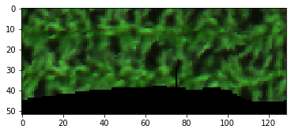
<p>A new folder was created in <code class="docutils literal notranslate"><span class="pre">base_dir</span></code>
- <code class="docutils literal notranslate"><span class="pre">F:\nigo0024\Documents\hs_process_demo\spatial_crop</span></code> - that
contains the cropped datacubes and the cropped <code class="docutils literal notranslate"><span class="pre">geotiff</span></code> images.
The Plot ID from the <code class="docutils literal notranslate"><span class="pre">gdf</span></code> is used to name each datacube
according to its plot ID. The <code class="docutils literal notranslate"><span class="pre">geotiff</span></code> images can be opened in
<em>QGIS</em> to visualize the images after cropping them.</p>
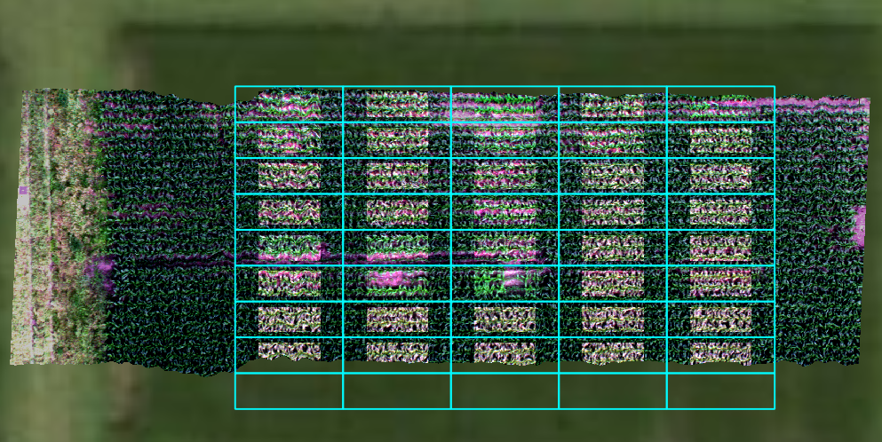
<p>The cropped images were brightened in <em>QGIS</em> to emphasize the
cropped boundaries. The plot boundaries are overlaid for reference
(notice the 2.0 m buffer on the East/West ends and the 0.5 m buffer
on the North/South sides).</p>
</dd></dl>

<dl class="method">
<dt id="hs_process.batch.spectra_combine">
<code class="sig-name descname">spectra_combine</code><span class="sig-paren">(</span><em class="sig-param">fname_list=None</em>, <em class="sig-param">base_dir=None</em>, <em class="sig-param">search_ext='bip'</em>, <em class="sig-param">dir_level=0</em>, <em class="sig-param">base_dir_out=None</em>, <em class="sig-param">out_dtype=False</em>, <em class="sig-param">out_force=None</em>, <em class="sig-param">out_ext=False</em>, <em class="sig-param">out_interleave=False</em>, <em class="sig-param">out_byteorder=False</em><span class="sig-paren">)</span><a class="reference internal" href="../_modules/hs_process/batch.html#batch.spectra_combine"><span class="viewcode-link">[source]</span></a><a class="headerlink" href="#hs_process.batch.spectra_combine" title="Permalink to this definition">¶</a></dt>
<dd><p>Batch processing tool to gather all pixels from every image in a
directory, compute the mean and standard deviation, and save as a
single spectra (i.e., a spectra file is equivalent to a single spectral
pixel with no spatial information).</p>
<dl class="field-list simple">
<dt class="field-odd">Parameters</dt>
<dd class="field-odd"><ul class="simple">
<li><p><strong>fname_list</strong> (<code class="docutils literal notranslate"><span class="pre">list</span></code>, optional) -- list of filenames to process; if
left to <code class="docutils literal notranslate"><span class="pre">None</span></code>, will look at <code class="docutils literal notranslate"><span class="pre">base_dir</span></code>, <code class="docutils literal notranslate"><span class="pre">search_ext</span></code>,
and <code class="docutils literal notranslate"><span class="pre">dir_level</span></code> parameters for files to process (default:
<code class="docutils literal notranslate"><span class="pre">None</span></code>).</p></li>
<li><p><strong>base_dir</strong> (<code class="docutils literal notranslate"><span class="pre">str</span></code>, optional) -- directory path to search for files to
spectrally clip; if <code class="docutils literal notranslate"><span class="pre">fname_list</span></code> is not <code class="docutils literal notranslate"><span class="pre">None</span></code>,
<code class="docutils literal notranslate"><span class="pre">base_dir</span></code> will be ignored (default: <code class="docutils literal notranslate"><span class="pre">None</span></code>).</p></li>
<li><p><strong>search_ext</strong> (<code class="docutils literal notranslate"><span class="pre">str</span></code>) -- file format/extension to search for in all
directories and subdirectories to determine which files to
process; if <code class="docutils literal notranslate"><span class="pre">fname_list</span></code> is not <code class="docutils literal notranslate"><span class="pre">None</span></code>, <code class="docutils literal notranslate"><span class="pre">search_ext</span></code> will
be ignored (default: 'bip').</p></li>
<li><p><strong>dir_level</strong> (<code class="docutils literal notranslate"><span class="pre">int</span></code>) -- The number of directory levels to search; if
<code class="docutils literal notranslate"><span class="pre">None</span></code>, searches all directory levels (default: 0).</p></li>
<li><p><strong>base_dir_out</strong> (<code class="docutils literal notranslate"><span class="pre">str</span></code>) -- directory path to save all processed
datacubes; if set to <code class="docutils literal notranslate"><span class="pre">None</span></code>, a folder named according to the
<code class="docutils literal notranslate"><span class="pre">folder_name</span></code> parameter is added to <code class="docutils literal notranslate"><span class="pre">base_dir</span></code> (default:
<code class="docutils literal notranslate"><span class="pre">None</span></code>).</p></li>
<li><p><strong>out_XXX</strong> -- Settings for saving the output files can be adjusted here
if desired. They are stored in <code class="docutils literal notranslate"><span class="pre">batch.io.defaults,</span> <span class="pre">and</span> <span class="pre">are</span>
<span class="pre">therefore</span> <span class="pre">accessible</span> <span class="pre">at</span> <span class="pre">a</span> <span class="pre">high</span> <span class="pre">level.</span> <span class="pre">See</span>
<span class="pre">``hsio.set_io_defaults()</span></code> for more information on each of the
settings.</p></li>
</ul>
</dd>
</dl>
<div class="admonition note">
<p class="admonition-title">Note</p>
<p>The following example will load in several small hyperspectral
radiance datacubes <em>(not reflectance)</em> that were previously cropped
manually (via Spectronon software). These datacubes represent the
radiance values of grey reference panels that were placed in the
field to provide data necessary for converting radiance imagery
to reflectance. These particular datacubes were extracted
from several different images captured within ~10 minutes of each
other.</p>
</div>
<p class="rubric">Example</p>
<p>Load and initialize the <code class="docutils literal notranslate"><span class="pre">batch</span></code> module, checking to be sure the
directory exists.</p>
<div class="highlight-default notranslate"><div class="highlight"><pre><span></span><span class="gp">&gt;&gt;&gt; </span><span class="kn">import</span> <span class="nn">os</span>
<span class="gp">&gt;&gt;&gt; </span><span class="kn">from</span> <span class="nn">hs_process</span> <span class="k">import</span> <span class="n">batch</span>
<span class="gp">&gt;&gt;&gt; </span><span class="n">base_dir</span> <span class="o">=</span> <span class="sa">r</span><span class="s1">&#39;F:\nigo0024\Documents\hs_process_demo\cube_ref_panels&#39;</span>
<span class="gp">&gt;&gt;&gt; </span><span class="nb">print</span><span class="p">(</span><span class="n">os</span><span class="o">.</span><span class="n">path</span><span class="o">.</span><span class="n">isdir</span><span class="p">(</span><span class="n">base_dir</span><span class="p">))</span>
<span class="go">True</span>
<span class="gp">&gt;&gt;&gt; </span><span class="n">hsbatch</span> <span class="o">=</span> <span class="n">batch</span><span class="p">(</span><span class="n">base_dir</span><span class="p">)</span>
</pre></div>
</div>
<p>Combine all the <em>radiance</em> datacubes in the directory via
<code class="docutils literal notranslate"><span class="pre">batch.spectra_combine</span></code>.</p>
<div class="highlight-default notranslate"><div class="highlight"><pre><span></span><span class="gp">&gt;&gt;&gt; </span><span class="n">hsbatch</span><span class="o">.</span><span class="n">spectra_combine</span><span class="p">(</span><span class="n">base_dir</span><span class="o">=</span><span class="n">base_dir</span><span class="p">,</span> <span class="n">search_ext</span><span class="o">=</span><span class="s1">&#39;bip&#39;</span><span class="p">,</span>
<span class="go">                            dir_level=0)</span>
<span class="go">Combining datacubes/spectra into a single mean spectra.</span>
<span class="go">Number of input datacubes/spectra: 7</span>
<span class="go">Total number of pixels: 1516</span>
<span class="go">Saving F:\nigo0024\Documents\hs_process_demo\cube_ref_panels\spec_mean_spy.spec</span>
</pre></div>
</div>
<p>Visualize the combined spectra by opening in <em>Spectronon</em>. The
solid line represents the mean radiance spectra across all pixels
and images in <code class="docutils literal notranslate"><span class="pre">base_dir</span></code>, and the lighter, slightly transparent
line represents the standard deviation of the radiance across all
pixels and images in <code class="docutils literal notranslate"><span class="pre">base_dir</span></code>.</p>
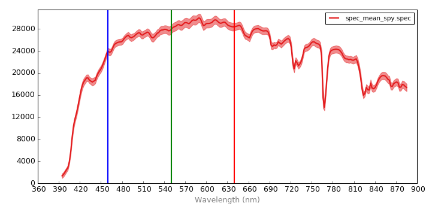
<p>Notice the lower signal at the oxygen absorption region (near 770
nm). After converting datacubes to reflectance, it may be
desireable to spectrally clip this region (see
<a class="reference external" href="hs_process.spec_mod.html#hs_process.spec_mod.spectral_clip">spec_mod.spectral_clip()</a>)</p>
</dd></dl>

<dl class="method">
<dt id="hs_process.batch.spectra_to_csv">
<code class="sig-name descname">spectra_to_csv</code><span class="sig-paren">(</span><em class="sig-param">fname_list=None</em>, <em class="sig-param">base_dir=None</em>, <em class="sig-param">search_ext='spec'</em>, <em class="sig-param">dir_level=0</em>, <em class="sig-param">base_dir_out=None</em><span class="sig-paren">)</span><a class="reference internal" href="../_modules/hs_process/batch.html#batch.spectra_to_csv"><span class="viewcode-link">[source]</span></a><a class="headerlink" href="#hs_process.batch.spectra_to_csv" title="Permalink to this definition">¶</a></dt>
<dd><p>Reads all the <code class="docutils literal notranslate"><span class="pre">.spec</span></code> files in a direcory and saves their reflectance
information to a <code class="docutils literal notranslate"><span class="pre">.csv</span></code>. <code class="docutils literal notranslate"><span class="pre">batch.spectra_to_csv</span></code> is identical to
<code class="docutils literal notranslate"><span class="pre">batch.spectra_to_df</span></code> except a <code class="docutils literal notranslate"><span class="pre">.csv</span></code> file is saved rather than
returning a <code class="docutils literal notranslate"><span class="pre">pandas.DataFrame</span></code>.</p>
<dl class="field-list simple">
<dt class="field-odd">Parameters</dt>
<dd class="field-odd"><ul class="simple">
<li><p><strong>fname_list</strong> (<code class="docutils literal notranslate"><span class="pre">list</span></code>, optional) -- list of filenames to process; if
left to <code class="docutils literal notranslate"><span class="pre">None</span></code>, will look at <code class="docutils literal notranslate"><span class="pre">base_dir</span></code>, <code class="docutils literal notranslate"><span class="pre">search_ext</span></code>, and
<code class="docutils literal notranslate"><span class="pre">dir_level</span></code> parameters for files to process (default: <code class="docutils literal notranslate"><span class="pre">None</span></code>).</p></li>
<li><p><strong>base_dir</strong> (<code class="docutils literal notranslate"><span class="pre">str</span></code>, optional) -- directory path to search for files to
spectrally clip; if <code class="docutils literal notranslate"><span class="pre">fname_list</span></code> is not <code class="docutils literal notranslate"><span class="pre">None</span></code>, <code class="docutils literal notranslate"><span class="pre">base_dir</span></code> will
be ignored (default: <code class="docutils literal notranslate"><span class="pre">None</span></code>).</p></li>
<li><p><strong>search_ext</strong> (<code class="docutils literal notranslate"><span class="pre">str</span></code>) -- file format/extension to search for in all
directories and subdirectories to determine which files to
process; if <code class="docutils literal notranslate"><span class="pre">fname_list</span></code> is not <code class="docutils literal notranslate"><span class="pre">None</span></code>, <code class="docutils literal notranslate"><span class="pre">search_ext</span></code> will
be ignored (default: 'bip').</p></li>
<li><p><strong>dir_level</strong> (<code class="docutils literal notranslate"><span class="pre">int</span></code>) -- The number of directory levels to search; if
<code class="docutils literal notranslate"><span class="pre">None</span></code>, searches all directory levels (default: 0).</p></li>
<li><p><strong>base_dir_out</strong> (<code class="docutils literal notranslate"><span class="pre">str</span></code>) -- directory path to save all processed
datacubes; if set to <code class="docutils literal notranslate"><span class="pre">None</span></code>, a folder named according to the
<code class="docutils literal notranslate"><span class="pre">folder_name</span></code> parameter is added to <code class="docutils literal notranslate"><span class="pre">base_dir</span></code></p></li>
</ul>
</dd>
</dl>
<div class="admonition note">
<p class="admonition-title">Note</p>
<p>The following example builds on the API example results of
<a class="reference external" href="hs_process.batch.html#hs_process.batch.segment_band_math">batch.segment_band_math()</a> and <cite>batch.segment_create_mask()_.
Please complete each of those API examples to be sure your
directory (i.e.,
``F:nigo0024Documentshs_process_demospatial_modcrop_many_gdfmask_mcari2_90th`</cite>)
is populated with image files.</p>
</div>
<p class="rubric">Example</p>
<p>Load and initialize the <code class="docutils literal notranslate"><span class="pre">batch</span></code> module, checking to be sure the
directory exists.</p>
<div class="highlight-default notranslate"><div class="highlight"><pre><span></span><span class="gp">&gt;&gt;&gt; </span><span class="kn">import</span> <span class="nn">os</span>
<span class="gp">&gt;&gt;&gt; </span><span class="kn">from</span> <span class="nn">hs_process</span> <span class="k">import</span> <span class="n">batch</span>
<span class="gp">&gt;&gt;&gt; </span><span class="n">base_dir</span> <span class="o">=</span> <span class="sa">r</span><span class="s1">&#39;F:\nigo0024\Documents\hs_process_demo\spatial_mod\crop_many_gdf\mask_mcari2_90th&#39;</span>
<span class="gp">&gt;&gt;&gt; </span><span class="nb">print</span><span class="p">(</span><span class="n">os</span><span class="o">.</span><span class="n">path</span><span class="o">.</span><span class="n">isdir</span><span class="p">(</span><span class="n">base_dir</span><span class="p">))</span>
<span class="go">True</span>
<span class="gp">&gt;&gt;&gt; </span><span class="n">hsbatch</span> <span class="o">=</span> <span class="n">batch</span><span class="p">(</span><span class="n">base_dir</span><span class="p">)</span>
</pre></div>
</div>
<p>Read all the <code class="docutils literal notranslate"><span class="pre">.spec</span></code> files in <code class="docutils literal notranslate"><span class="pre">base_dir</span></code> and save them to a
<code class="docutils literal notranslate"><span class="pre">.csv</span></code> file.</p>
<div class="highlight-default notranslate"><div class="highlight"><pre><span></span><span class="gp">&gt;&gt;&gt; </span><span class="n">hsbatch</span><span class="o">.</span><span class="n">spectra_to_csv</span><span class="p">(</span><span class="n">base_dir</span><span class="o">=</span><span class="n">base_dir</span><span class="p">,</span> <span class="n">search_ext</span><span class="o">=</span><span class="s1">&#39;spec&#39;</span><span class="p">,</span>
<span class="go">                           dir_level=0)</span>
<span class="go">Writing mean spectra to a .csv file.</span>
<span class="go">Number of input datacubes/spectra: 40</span>
<span class="go">Output file location: F:\nigo0024\Documents\hs_process_demo\spatial_mod\crop_many_gdf\mask_mcari2_90th\stats-spectra.csv</span>
</pre></div>
</div>
<p>When <code class="docutils literal notranslate"><span class="pre">stats-spectra.csv</span></code> is opened in Microsoft Excel, we can see
that each row is a <code class="docutils literal notranslate"><span class="pre">.spec</span></code> file from a different plot, and each
column is a particular spectral band/wavelength.</p>
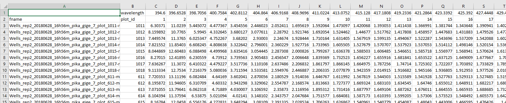
</dd></dl>

<dl class="method">
<dt id="hs_process.batch.spectra_to_df">
<code class="sig-name descname">spectra_to_df</code><span class="sig-paren">(</span><em class="sig-param">fname_list=None</em>, <em class="sig-param">base_dir=None</em>, <em class="sig-param">search_ext='spec'</em>, <em class="sig-param">dir_level=0</em><span class="sig-paren">)</span><a class="reference internal" href="../_modules/hs_process/batch.html#batch.spectra_to_df"><span class="viewcode-link">[source]</span></a><a class="headerlink" href="#hs_process.batch.spectra_to_df" title="Permalink to this definition">¶</a></dt>
<dd><p>Reads all the .spec files in a direcory and returns their data as a
<code class="docutils literal notranslate"><span class="pre">pandas.DataFrame</span></code> object. <code class="docutils literal notranslate"><span class="pre">batch.spectra_to_df</span></code> is identical to
<code class="docutils literal notranslate"><span class="pre">batch.spectra_to_csv</span></code> except a <code class="docutils literal notranslate"><span class="pre">pandas.DataFrame</span></code> is returned
rather than saving a <code class="docutils literal notranslate"><span class="pre">.csv</span></code> file.</p>
<dl class="field-list simple">
<dt class="field-odd">Parameters</dt>
<dd class="field-odd"><ul class="simple">
<li><p><strong>fname_list</strong> (<code class="docutils literal notranslate"><span class="pre">list</span></code>, optional) -- list of filenames to process; if
left to <code class="docutils literal notranslate"><span class="pre">None</span></code>, will look at <code class="docutils literal notranslate"><span class="pre">base_dir</span></code>, <code class="docutils literal notranslate"><span class="pre">search_ext</span></code>, and
<code class="docutils literal notranslate"><span class="pre">dir_level</span></code> parameters for files to process (default: <code class="docutils literal notranslate"><span class="pre">None</span></code>).</p></li>
<li><p><strong>base_dir</strong> (<code class="docutils literal notranslate"><span class="pre">str</span></code>, optional) -- directory path to search for files to
spectrally clip; if <code class="docutils literal notranslate"><span class="pre">fname_list</span></code> is not <code class="docutils literal notranslate"><span class="pre">None</span></code>, <code class="docutils literal notranslate"><span class="pre">base_dir</span></code> will
be ignored (default: <code class="docutils literal notranslate"><span class="pre">None</span></code>).</p></li>
<li><p><strong>search_ext</strong> (<code class="docutils literal notranslate"><span class="pre">str</span></code>) -- file format/extension to search for in all
directories and subdirectories to determine which files to
process; if <code class="docutils literal notranslate"><span class="pre">fname_list</span></code> is not <code class="docutils literal notranslate"><span class="pre">None</span></code>, <code class="docutils literal notranslate"><span class="pre">search_ext</span></code> will
be ignored (default: 'bip').</p></li>
<li><p><strong>dir_level</strong> (<code class="docutils literal notranslate"><span class="pre">int</span></code>) -- The number of directory levels to search; if
<code class="docutils literal notranslate"><span class="pre">None</span></code>, searches all directory levels (default: 0).</p></li>
</ul>
</dd>
</dl>
<div class="admonition note">
<p class="admonition-title">Note</p>
<p>The following example builds on the API example results of
<a class="reference external" href="hs_process.batch.html#hs_process.batch.segment_band_math">batch.segment_band_math()</a> and <cite>batch.segment_create_mask()_.
Please complete each of those API examples to be sure your
directory (i.e.,
``F:nigo0024Documentshs_process_demospatial_modcrop_many_gdfmask_mcari2_90th`</cite>)
is populated with image files.</p>
</div>
<p class="rubric">Example</p>
<p>Load and initialize the <code class="docutils literal notranslate"><span class="pre">batch</span></code> module, checking to be sure the
directory exists.</p>
<div class="highlight-default notranslate"><div class="highlight"><pre><span></span><span class="gp">&gt;&gt;&gt; </span><span class="kn">import</span> <span class="nn">os</span>
<span class="gp">&gt;&gt;&gt; </span><span class="kn">from</span> <span class="nn">hs_process</span> <span class="k">import</span> <span class="n">batch</span>
<span class="gp">&gt;&gt;&gt; </span><span class="n">base_dir</span> <span class="o">=</span> <span class="sa">r</span><span class="s1">&#39;F:\nigo0024\Documents\hs_process_demo\spatial_mod\crop_many_gdf\mask_mcari2_90th&#39;</span>
<span class="gp">&gt;&gt;&gt; </span><span class="nb">print</span><span class="p">(</span><span class="n">os</span><span class="o">.</span><span class="n">path</span><span class="o">.</span><span class="n">isdir</span><span class="p">(</span><span class="n">base_dir</span><span class="p">))</span>
<span class="go">True</span>
<span class="gp">&gt;&gt;&gt; </span><span class="n">hsbatch</span> <span class="o">=</span> <span class="n">batch</span><span class="p">(</span><span class="n">base_dir</span><span class="p">)</span>
</pre></div>
</div>
<p>Read all the <code class="docutils literal notranslate"><span class="pre">.spec</span></code> files in <code class="docutils literal notranslate"><span class="pre">base_dir</span></code> and load them to
<code class="docutils literal notranslate"><span class="pre">df_spec</span></code>, a <code class="docutils literal notranslate"><span class="pre">pandas.DataFrame</span></code>.</p>
<div class="highlight-default notranslate"><div class="highlight"><pre><span></span><span class="gp">&gt;&gt;&gt; </span><span class="n">df_spec</span> <span class="o">=</span> <span class="n">hsbatch</span><span class="o">.</span><span class="n">spectra_to_df</span><span class="p">(</span><span class="n">base_dir</span><span class="o">=</span><span class="n">base_dir</span><span class="p">,</span> <span class="n">search_ext</span><span class="o">=</span><span class="s1">&#39;spec&#39;</span><span class="p">,</span>
<span class="go">                                    dir_level=0)</span>
<span class="go">Writing mean spectra to a ``pandas.DataFrame``.</span>
<span class="go">Number of input datacubes/spectra: 40</span>
</pre></div>
</div>
<p>When visualizing <code class="docutils literal notranslate"><span class="pre">df_spe</span></code> in <a class="reference external" href="https://www.spyder-ide.org/">Spyder</a>, we can see that each row
is a <code class="docutils literal notranslate"><span class="pre">.spec</span></code> file from a different plot, and each column is a
particular spectral band.</p>
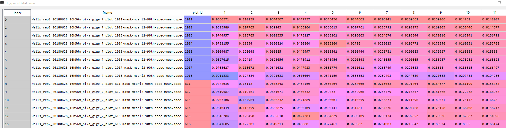
<p>It is somewhat confusing to conceptualize spectral data by band
number (as opposed to the wavelenth it represents).
<code class="docutils literal notranslate"><span class="pre">hs_process.hs_tools.get_band</span></code> can be utilized to retrieve
spectral data for all plots via indexing by wavelength. Say we need
to access reflectance at 710 nm for each plot.</p>
<div class="highlight-default notranslate"><div class="highlight"><pre><span></span><span class="gp">&gt;&gt;&gt; </span><span class="n">df_710nm</span> <span class="o">=</span> <span class="n">df_spec</span><span class="p">[[</span><span class="s1">&#39;fname&#39;</span><span class="p">,</span> <span class="s1">&#39;plot_id&#39;</span><span class="p">,</span> <span class="n">hsbatch</span><span class="o">.</span><span class="n">io</span><span class="o">.</span><span class="n">tools</span><span class="o">.</span><span class="n">get_band</span><span class="p">(</span><span class="mi">710</span><span class="p">)]]</span>
</pre></div>
</div>
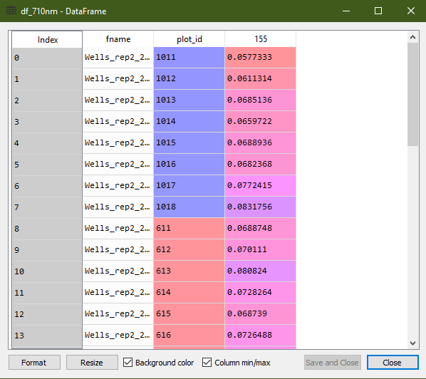
</dd></dl>

<dl class="method">
<dt id="hs_process.batch.spectral_clip">
<code class="sig-name descname">spectral_clip</code><span class="sig-paren">(</span><em class="sig-param">fname_list=None, base_dir=None, search_ext='bip', dir_level=0, base_dir_out=None, folder_name='spec_clip', name_append='spec-clip', wl_bands=[[0, 420], [760, 776], [813, 827], [880, 1000]], out_dtype=False, out_force=None, out_ext=False, out_interleave=False, out_byteorder=False</em><span class="sig-paren">)</span><a class="reference internal" href="../_modules/hs_process/batch.html#batch.spectral_clip"><span class="viewcode-link">[source]</span></a><a class="headerlink" href="#hs_process.batch.spectral_clip" title="Permalink to this definition">¶</a></dt>
<dd><p>Batch processing tool to spectrally clip multiple datacubes in the same
way.</p>
<dl class="field-list simple">
<dt class="field-odd">Parameters</dt>
<dd class="field-odd"><ul class="simple">
<li><p><strong>fname_list</strong> (<code class="docutils literal notranslate"><span class="pre">list</span></code>, optional) -- list of filenames to process; if
left to <code class="docutils literal notranslate"><span class="pre">None</span></code>, will look at <code class="docutils literal notranslate"><span class="pre">base_dir</span></code>, <code class="docutils literal notranslate"><span class="pre">search_ext</span></code>, and
<code class="docutils literal notranslate"><span class="pre">dir_level</span></code> parameters for files to process (default: <code class="docutils literal notranslate"><span class="pre">None</span></code>).</p></li>
<li><p><strong>base_dir</strong> (<code class="docutils literal notranslate"><span class="pre">str</span></code>, optional) -- directory path to search for files to
spectrally clip; if <code class="docutils literal notranslate"><span class="pre">fname_list</span></code> is not <code class="docutils literal notranslate"><span class="pre">None</span></code>, <code class="docutils literal notranslate"><span class="pre">base_dir</span></code> will
be ignored (default: <code class="docutils literal notranslate"><span class="pre">None</span></code>).</p></li>
<li><p><strong>search_ext</strong> (<code class="docutils literal notranslate"><span class="pre">str</span></code>) -- file format/extension to search for in all
directories and subdirectories to determine which files to
process; if <code class="docutils literal notranslate"><span class="pre">fname_list</span></code> is not <code class="docutils literal notranslate"><span class="pre">None</span></code>, <code class="docutils literal notranslate"><span class="pre">search_ext</span></code> will
be ignored (default: 'bip').</p></li>
<li><p><strong>dir_level</strong> (<code class="docutils literal notranslate"><span class="pre">int</span></code>) -- The number of directory levels to search; if
<code class="docutils literal notranslate"><span class="pre">None</span></code>, searches all directory levels (default: 0).</p></li>
<li><p><strong>base_dir_out</strong> (<code class="docutils literal notranslate"><span class="pre">str</span></code>) -- directory path to save all processed
datacubes; if set to <code class="docutils literal notranslate"><span class="pre">None</span></code>, a folder named according to the
<code class="docutils literal notranslate"><span class="pre">folder_name</span></code> parameter is added to <code class="docutils literal notranslate"><span class="pre">base_dir</span></code></p></li>
<li><p><strong>folder_name</strong> (<code class="docutils literal notranslate"><span class="pre">str</span></code>) -- folder to add to <code class="docutils literal notranslate"><span class="pre">base_dir_out</span></code> to save all
the processed datacubes (default: 'spec-clip').</p></li>
<li><p><strong>name_append</strong> (<code class="docutils literal notranslate"><span class="pre">str</span></code>) -- name to append to the filename (default:
'spec-clip').</p></li>
<li><p><strong>wl_bands</strong> (<code class="docutils literal notranslate"><span class="pre">list</span></code> or <code class="docutils literal notranslate"><span class="pre">list</span> <span class="pre">of</span> <span class="pre">lists</span></code>) -- minimum and maximum
wavelenths to clip from image; if multiple groups of
wavelengths should be cut, this should be a list of lists. For
example, wl_bands=[760, 776] will clip all bands greater than
760.0 nm and less than 776.0 nm;
wl_bands = [[0, 420], [760, 776], [813, 827], [880, 1000]]
will clip all band less than 420.0 nm, bands greater than 760.0
nm and less than 776.0 nm, bands greater than 813.0 nm and less
than 827.0 nm, and bands greater than 880 nm (default).</p></li>
<li><p><strong>out_XXX</strong> -- Settings for saving the output files can be adjusted here
if desired. They are stored in <code class="docutils literal notranslate"><span class="pre">batch.io.defaults,</span> <span class="pre">and</span> <span class="pre">are</span>
<span class="pre">therefore</span> <span class="pre">accessible</span> <span class="pre">at</span> <span class="pre">a</span> <span class="pre">high</span> <span class="pre">level.</span> <span class="pre">See</span>
<span class="pre">``hsio.set_io_defaults()</span></code> for more information on each of the
settings.</p></li>
</ul>
</dd>
</dl>
<div class="admonition note">
<p class="admonition-title">Note</p>
<p>The following <code class="docutils literal notranslate"><span class="pre">batch</span></code> example builds on the API example results
of the <a class="reference external" href="hs_process.batch.html#hs_process.batch.spatial_crop">batch.spatial_crop</a> function. Please complete the
<a class="reference external" href="hs_process.batch.html#hs_process.batch.spatial_crop">batch.spatial_crop</a> example to be sure your directory
(i.e., <code class="docutils literal notranslate"><span class="pre">base_dir</span></code>) is populated with multiple hyperspectral
datacubes. The following example will be using datacubes located in
the following directory:
<code class="docutils literal notranslate"><span class="pre">F:\nigo0024\Documents\hs_process_demo\spatial_crop</span></code></p>
</div>
<p class="rubric">Example</p>
<p>Load and initialize the <code class="docutils literal notranslate"><span class="pre">batch</span></code> module, checking to be sure the
directory exists.</p>
<div class="highlight-default notranslate"><div class="highlight"><pre><span></span><span class="gp">&gt;&gt;&gt; </span><span class="kn">import</span> <span class="nn">os</span>
<span class="gp">&gt;&gt;&gt; </span><span class="kn">from</span> <span class="nn">hs_process</span> <span class="k">import</span> <span class="n">batch</span>
<span class="gp">&gt;&gt;&gt; </span><span class="n">base_dir</span> <span class="o">=</span> <span class="sa">r</span><span class="s1">&#39;F:\nigo0024\Documents\hs_process_demo\spatial_crop&#39;</span>
<span class="gp">&gt;&gt;&gt; </span><span class="nb">print</span><span class="p">(</span><span class="n">os</span><span class="o">.</span><span class="n">path</span><span class="o">.</span><span class="n">isdir</span><span class="p">(</span><span class="n">base_dir</span><span class="p">))</span>
<span class="go">True</span>
<span class="gp">&gt;&gt;&gt; </span><span class="n">hsbatch</span> <span class="o">=</span> <span class="n">batch</span><span class="p">(</span><span class="n">base_dir</span><span class="p">,</span> <span class="n">search_ext</span><span class="o">=</span><span class="s1">&#39;.bip&#39;</span><span class="p">)</span>  <span class="c1"># searches for all files in ``base_dir`` with a &quot;.bip&quot; file extension</span>
</pre></div>
</div>
<p>Use <code class="docutils literal notranslate"><span class="pre">batch.spectral_clip</span></code> to clip all spectral bands below
<em>420 nm</em> and above <em>880 nm</em>, as well as the bands near the oxygen
absorption (i.e., <em>760-776 nm</em>) and water absorption
(i.e., <em>813-827 nm</em>) regions.</p>
<div class="highlight-default notranslate"><div class="highlight"><pre><span></span><span class="gp">&gt;&gt;&gt; </span><span class="n">hsbatch</span><span class="o">.</span><span class="n">spectral_clip</span><span class="p">(</span><span class="n">base_dir</span><span class="o">=</span><span class="n">base_dir</span><span class="p">,</span> <span class="n">folder_name</span><span class="o">=</span><span class="s1">&#39;spec_clip&#39;</span><span class="p">,</span>
<span class="go">                          wl_bands=[[0, 420], [760, 776], [813, 827], [880, 1000]])</span>
<span class="go">Processing 40 files. If this is not what is expected, please check if files have already undergone processing. If existing files should be overwritten, be sure to set the ``out_force`` parameter.</span>
<span class="go">Spectrally clipping: F:\nigo0024\Documents\hs_process_demo\spatial_crop\Wells_rep2_20180628_16h56m_pika_gige_7_1011-spatial-crop.bip</span>
<span class="go">Saving F:\nigo0024\Documents\hs_process_demo\spatial_crop\spec_clip\Wells_rep2_20180628_16h56m_pika_gige_7_1011-spec-clip.bip</span>
<span class="go">Spectrally clipping: F:\nigo0024\Documents\hs_process_demo\spatial_crop\Wells_rep2_20180628_16h56m_pika_gige_7_1012-spatial-crop.bip</span>
<span class="go">Saving F:\nigo0024\Documents\hs_process_demo\spatial_crop\spec_clip\Wells_rep2_20180628_16h56m_pika_gige_7_1012-spec-clip.bip</span>
<span class="gp">...</span>
</pre></div>
</div>
<p>Use <code class="docutils literal notranslate"><span class="pre">seaborn</span></code> to visualize the spectra of a single pixel in one
of the processed images.</p>
<div class="highlight-default notranslate"><div class="highlight"><pre><span></span><span class="gp">&gt;&gt;&gt; </span><span class="kn">import</span> <span class="nn">seaborn</span> <span class="k">as</span> <span class="nn">sns</span>
<span class="gp">&gt;&gt;&gt; </span><span class="n">fname</span> <span class="o">=</span> <span class="n">os</span><span class="o">.</span><span class="n">path</span><span class="o">.</span><span class="n">join</span><span class="p">(</span><span class="n">base_dir</span><span class="p">,</span> <span class="s1">&#39;Wells_rep2_20180628_16h56m_pika_gige_7_1011-spatial-crop.bip&#39;</span><span class="p">)</span>
<span class="gp">&gt;&gt;&gt; </span><span class="n">hsbatch</span><span class="o">.</span><span class="n">io</span><span class="o">.</span><span class="n">read_cube</span><span class="p">(</span><span class="n">fname</span><span class="p">)</span>
<span class="gp">&gt;&gt;&gt; </span><span class="n">spy_mem</span> <span class="o">=</span> <span class="n">hsbatch</span><span class="o">.</span><span class="n">io</span><span class="o">.</span><span class="n">spyfile</span><span class="o">.</span><span class="n">open_memmap</span><span class="p">()</span>  <span class="c1"># datacube before clipping</span>
<span class="gp">&gt;&gt;&gt; </span><span class="n">meta_bands</span> <span class="o">=</span> <span class="nb">list</span><span class="p">(</span><span class="n">hsbatch</span><span class="o">.</span><span class="n">io</span><span class="o">.</span><span class="n">tools</span><span class="o">.</span><span class="n">meta_bands</span><span class="o">.</span><span class="n">values</span><span class="p">())</span>
<span class="gp">&gt;&gt;&gt; </span><span class="n">fname</span> <span class="o">=</span> <span class="n">os</span><span class="o">.</span><span class="n">path</span><span class="o">.</span><span class="n">join</span><span class="p">(</span><span class="n">base_dir</span><span class="p">,</span> <span class="s1">&#39;spec_clip&#39;</span><span class="p">,</span> <span class="s1">&#39;Wells_rep2_20180628_16h56m_pika_gige_7_1011-spec-clip.bip&#39;</span><span class="p">)</span>
<span class="gp">&gt;&gt;&gt; </span><span class="n">hsbatch</span><span class="o">.</span><span class="n">io</span><span class="o">.</span><span class="n">read_cube</span><span class="p">(</span><span class="n">fname</span><span class="p">)</span>
<span class="gp">&gt;&gt;&gt; </span><span class="n">spy_mem_clip</span> <span class="o">=</span> <span class="n">hsbatch</span><span class="o">.</span><span class="n">io</span><span class="o">.</span><span class="n">spyfile</span><span class="o">.</span><span class="n">open_memmap</span><span class="p">()</span>  <span class="c1"># datacube after clipping</span>
<span class="gp">&gt;&gt;&gt; </span><span class="n">meta_bands_clip</span> <span class="o">=</span> <span class="nb">list</span><span class="p">(</span><span class="n">hsbatch</span><span class="o">.</span><span class="n">io</span><span class="o">.</span><span class="n">tools</span><span class="o">.</span><span class="n">meta_bands</span><span class="o">.</span><span class="n">values</span><span class="p">())</span>
<span class="gp">&gt;&gt;&gt; </span><span class="n">ax</span> <span class="o">=</span> <span class="n">sns</span><span class="o">.</span><span class="n">lineplot</span><span class="p">(</span><span class="n">x</span><span class="o">=</span><span class="n">meta_bands</span><span class="p">,</span> <span class="n">y</span><span class="o">=</span><span class="n">spy_mem</span><span class="p">[</span><span class="mi">26</span><span class="p">][</span><span class="mi">29</span><span class="p">],</span> <span class="n">label</span><span class="o">=</span><span class="s1">&#39;Before spectral clipping&#39;</span><span class="p">,</span> <span class="n">linewidth</span><span class="o">=</span><span class="mi">3</span><span class="p">)</span>
<span class="gp">&gt;&gt;&gt; </span><span class="n">ax</span> <span class="o">=</span> <span class="n">sns</span><span class="o">.</span><span class="n">lineplot</span><span class="p">(</span><span class="n">x</span><span class="o">=</span><span class="n">meta_bands_clip</span><span class="p">,</span> <span class="n">y</span><span class="o">=</span><span class="n">spy_mem_clip</span><span class="p">[</span><span class="mi">26</span><span class="p">][</span><span class="mi">29</span><span class="p">],</span> <span class="n">label</span><span class="o">=</span><span class="s1">&#39;After spectral clipping&#39;</span><span class="p">,</span> <span class="n">ax</span><span class="o">=</span><span class="n">ax</span><span class="p">)</span>
<span class="gp">&gt;&gt;&gt; </span><span class="n">ax</span><span class="o">.</span><span class="n">set_xlabel</span><span class="p">(</span><span class="s1">&#39;Wavelength (nm)&#39;</span><span class="p">,</span> <span class="n">weight</span><span class="o">=</span><span class="s1">&#39;bold&#39;</span><span class="p">)</span>
<span class="gp">&gt;&gt;&gt; </span><span class="n">ax</span><span class="o">.</span><span class="n">set_ylabel</span><span class="p">(</span><span class="s1">&#39;Reflectance (%)&#39;</span><span class="p">,</span> <span class="n">weight</span><span class="o">=</span><span class="s1">&#39;bold&#39;</span><span class="p">)</span>
<span class="gp">&gt;&gt;&gt; </span><span class="n">ax</span><span class="o">.</span><span class="n">set_title</span><span class="p">(</span><span class="sa">r</span><span class="s1">&#39;API Example: `batch.spectral_clip`&#39;</span><span class="p">,</span> <span class="n">weight</span><span class="o">=</span><span class="s1">&#39;bold&#39;</span><span class="p">)</span>
</pre></div>
</div>
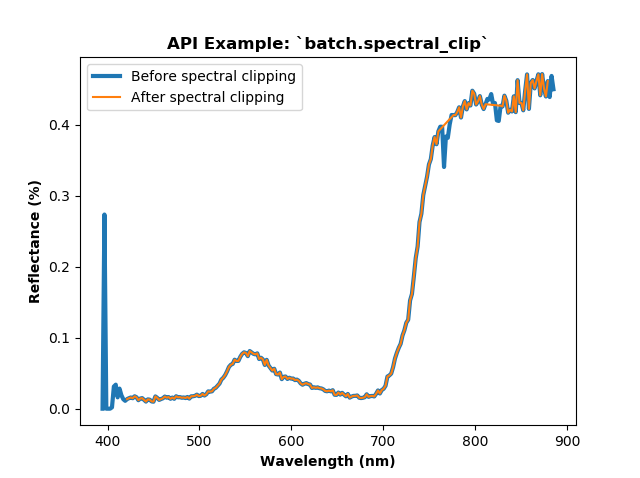
<p>Notice the spectral areas that were clipped, namely the oxygen and
water absorption regions (~770 and ~820 nm, respectively). There
is perhaps a lower <em>signal:noise</em> ratio in these regions, which was
the merit for clipping those bands out.</p>
</dd></dl>

<dl class="method">
<dt id="hs_process.batch.spectral_smooth">
<code class="sig-name descname">spectral_smooth</code><span class="sig-paren">(</span><em class="sig-param">fname_list=None</em>, <em class="sig-param">base_dir=None</em>, <em class="sig-param">search_ext='bip'</em>, <em class="sig-param">dir_level=0</em>, <em class="sig-param">base_dir_out=None</em>, <em class="sig-param">folder_name='spec_smooth'</em>, <em class="sig-param">name_append='spec-smooth'</em>, <em class="sig-param">window_size=11</em>, <em class="sig-param">order=2</em>, <em class="sig-param">stats=False</em>, <em class="sig-param">out_dtype=False</em>, <em class="sig-param">out_force=None</em>, <em class="sig-param">out_ext=False</em>, <em class="sig-param">out_interleave=False</em>, <em class="sig-param">out_byteorder=False</em><span class="sig-paren">)</span><a class="reference internal" href="../_modules/hs_process/batch.html#batch.spectral_smooth"><span class="viewcode-link">[source]</span></a><a class="headerlink" href="#hs_process.batch.spectral_smooth" title="Permalink to this definition">¶</a></dt>
<dd><p>Batch processing tool to spectrally smooth multiple datacubes in the
same way.</p>
<dl class="field-list simple">
<dt class="field-odd">Parameters</dt>
<dd class="field-odd"><ul class="simple">
<li><p><strong>fname_list</strong> (<code class="docutils literal notranslate"><span class="pre">list</span></code>, optional) -- list of filenames to process; if
left to <code class="docutils literal notranslate"><span class="pre">None</span></code>, will look at <code class="docutils literal notranslate"><span class="pre">base_dir</span></code>, <code class="docutils literal notranslate"><span class="pre">search_ext</span></code>, and
<code class="docutils literal notranslate"><span class="pre">dir_level</span></code> parameters for files to process (default: <code class="docutils literal notranslate"><span class="pre">None</span></code>).</p></li>
<li><p><strong>base_dir</strong> (<code class="docutils literal notranslate"><span class="pre">str</span></code>, optional) -- directory path to search for files to
spectrally clip; if <code class="docutils literal notranslate"><span class="pre">fname_list</span></code> is not <code class="docutils literal notranslate"><span class="pre">None</span></code>, <code class="docutils literal notranslate"><span class="pre">base_dir</span></code> will
be ignored (default: <code class="docutils literal notranslate"><span class="pre">None</span></code>).</p></li>
<li><p><strong>search_ext</strong> (<code class="docutils literal notranslate"><span class="pre">str</span></code>) -- file format/extension to search for in all
directories and subdirectories to determine which files to
process; if <code class="docutils literal notranslate"><span class="pre">fname_list</span></code> is not <code class="docutils literal notranslate"><span class="pre">None</span></code>, <code class="docutils literal notranslate"><span class="pre">search_ext</span></code> will
be ignored (default: 'bip').</p></li>
<li><p><strong>dir_level</strong> (<code class="docutils literal notranslate"><span class="pre">int</span></code>) -- The number of directory levels to search; if
<code class="docutils literal notranslate"><span class="pre">None</span></code>, searches all directory levels (default: 0).</p></li>
<li><p><strong>base_dir_out</strong> (<code class="docutils literal notranslate"><span class="pre">str</span></code>) -- directory path to save all processed
datacubes; if set to <code class="docutils literal notranslate"><span class="pre">None</span></code>, a folder named according to the
<code class="docutils literal notranslate"><span class="pre">folder_name</span></code> parameter is added to <code class="docutils literal notranslate"><span class="pre">base_dir</span></code></p></li>
<li><p><strong>folder_name</strong> (<code class="docutils literal notranslate"><span class="pre">str</span></code>) -- folder to add to <code class="docutils literal notranslate"><span class="pre">base_dir_out</span></code> to save all
the processed datacubes (default: 'spec-smooth').</p></li>
<li><p><strong>name_append</strong> (<code class="docutils literal notranslate"><span class="pre">str</span></code>) -- name to append to the filename (default:
'spec-smooth').</p></li>
<li><p><strong>window_size</strong> (<code class="docutils literal notranslate"><span class="pre">int</span></code>) -- the length of the window; must be an odd
integer number (default: 11).</p></li>
<li><p><strong>order</strong> (<code class="docutils literal notranslate"><span class="pre">int</span></code>) -- the order of the polynomial used in the filtering;
must be less than <code class="docutils literal notranslate"><span class="pre">window_size</span></code> - 1 (default: 2).</p></li>
<li><p><strong>stats</strong> (<code class="docutils literal notranslate"><span class="pre">bool</span></code>) -- whether to compute some basic descriptive
statistics (mean, st. dev., and coefficient of variation) of
the smoothed data array (default: <code class="docutils literal notranslate"><span class="pre">False</span></code>)</p></li>
<li><p><strong>out_XXX</strong> -- Settings for saving the output files can be adjusted here
if desired. They are stored in <code class="docutils literal notranslate"><span class="pre">batch.io.defaults,</span> <span class="pre">and</span> <span class="pre">are</span>
<span class="pre">therefore</span> <span class="pre">accessible</span> <span class="pre">at</span> <span class="pre">a</span> <span class="pre">high</span> <span class="pre">level.</span> <span class="pre">See</span>
<span class="pre">``hsio.set_io_defaults()</span></code> for more information on each of the
settings.</p></li>
</ul>
</dd>
</dl>
<div class="admonition note">
<p class="admonition-title">Note</p>
<p>The following <code class="docutils literal notranslate"><span class="pre">batch</span></code> example builds on the API example results
of the <a class="reference external" href="hs_process.batch.html#hs_process.batch.spatial_crop">batch.spatial_crop</a> function. Please complete the
<a class="reference external" href="hs_process.batch.html#hs_process.batch.spatial_crop">batch.spatial_crop</a> example to be sure your directory
(i.e., <code class="docutils literal notranslate"><span class="pre">base_dir</span></code>) is populated with multiple hyperspectral
datacubes. The following example will be using datacubes located in
the following directory:
<code class="docutils literal notranslate"><span class="pre">F:\nigo0024\Documents\hs_process_demo\spatial_crop</span></code></p>
</div>
<p class="rubric">Example</p>
<p>Load and initialize the <code class="docutils literal notranslate"><span class="pre">batch</span></code> module, checking to be sure the
directory exists.</p>
<div class="highlight-default notranslate"><div class="highlight"><pre><span></span><span class="gp">&gt;&gt;&gt; </span><span class="kn">import</span> <span class="nn">os</span>
<span class="gp">&gt;&gt;&gt; </span><span class="kn">from</span> <span class="nn">hs_process</span> <span class="k">import</span> <span class="n">batch</span>
<span class="gp">&gt;&gt;&gt; </span><span class="n">base_dir</span> <span class="o">=</span> <span class="sa">r</span><span class="s1">&#39;F:\nigo0024\Documents\hs_process_demo\spatial_crop&#39;</span>
<span class="gp">&gt;&gt;&gt; </span><span class="nb">print</span><span class="p">(</span><span class="n">os</span><span class="o">.</span><span class="n">path</span><span class="o">.</span><span class="n">isdir</span><span class="p">(</span><span class="n">base_dir</span><span class="p">))</span>
<span class="go">True</span>
<span class="gp">&gt;&gt;&gt; </span><span class="n">hsbatch</span> <span class="o">=</span> <span class="n">batch</span><span class="p">(</span><span class="n">base_dir</span><span class="p">,</span> <span class="n">search_ext</span><span class="o">=</span><span class="s1">&#39;.bip&#39;</span><span class="p">)</span>  <span class="c1"># searches for all files in ``base_dir`` with a &quot;.bip&quot; file extension</span>
</pre></div>
</div>
<p>Use <code class="docutils literal notranslate"><span class="pre">batch.spectral_smooth</span></code> to perform a <em>Savitzky-Golay</em>
smoothing operation on each image/pixel in <code class="docutils literal notranslate"><span class="pre">base_dir</span></code>. The
<code class="docutils literal notranslate"><span class="pre">window_size</span></code> and <code class="docutils literal notranslate"><span class="pre">order</span></code> can be adjusted to achieve desired
smoothing results.</p>
<div class="highlight-default notranslate"><div class="highlight"><pre><span></span><span class="gp">&gt;&gt;&gt; </span><span class="n">hsbatch</span><span class="o">.</span><span class="n">spectral_smooth</span><span class="p">(</span><span class="n">base_dir</span><span class="o">=</span><span class="n">base_dir</span><span class="p">,</span> <span class="n">folder_name</span><span class="o">=</span><span class="s1">&#39;spec_smooth&#39;</span><span class="p">,</span>
<span class="go">                            window_size=11, order=2)</span>
<span class="go">Processing 40 files. If this is not what is expected, please check if files have already undergone processing. If existing files should be overwritten, be sure to set the ``out_force`` parameter.</span>
<span class="go">Spectrally smoothing: F:\nigo0024\Documents\hs_process_demo\spatial_crop\Wells_rep2_20180628_16h56m_pika_gige_7_1011-spatial-crop.bip</span>
<span class="go">Saving F:\nigo0024\Documents\hs_process_demo\spatial_crop\spec_smooth\Wells_rep2_20180628_16h56m_pika_gige_7_1011-spec-smooth.bip</span>
<span class="go">Spectrally smoothing: F:\nigo0024\Documents\hs_process_demo\spatial_crop\Wells_rep2_20180628_16h56m_pika_gige_7_1012-spatial-crop.bip</span>
<span class="go">Saving F:\nigo0024\Documents\hs_process_demo\spatial_crop\spec_smooth\Wells_rep2_20180628_16h56m_pika_gige_7_1012-spec-smooth.bip</span>
<span class="gp">...</span>
</pre></div>
</div>
<p>Use <code class="docutils literal notranslate"><span class="pre">seaborn</span></code> to visualize the spectra of a single pixel in one
of the processed images.</p>
<div class="highlight-default notranslate"><div class="highlight"><pre><span></span><span class="gp">&gt;&gt;&gt; </span><span class="kn">import</span> <span class="nn">seaborn</span> <span class="k">as</span> <span class="nn">sns</span>
<span class="gp">&gt;&gt;&gt; </span><span class="n">fname</span> <span class="o">=</span> <span class="n">os</span><span class="o">.</span><span class="n">path</span><span class="o">.</span><span class="n">join</span><span class="p">(</span><span class="n">base_dir</span><span class="p">,</span> <span class="s1">&#39;Wells_rep2_20180628_16h56m_pika_gige_7_1011-spatial-crop.bip&#39;</span><span class="p">)</span>
<span class="gp">&gt;&gt;&gt; </span><span class="n">hsbatch</span><span class="o">.</span><span class="n">io</span><span class="o">.</span><span class="n">read_cube</span><span class="p">(</span><span class="n">fname</span><span class="p">)</span>
<span class="gp">&gt;&gt;&gt; </span><span class="n">spy_mem</span> <span class="o">=</span> <span class="n">hsbatch</span><span class="o">.</span><span class="n">io</span><span class="o">.</span><span class="n">spyfile</span><span class="o">.</span><span class="n">open_memmap</span><span class="p">()</span>  <span class="c1"># datacube before smoothing</span>
<span class="gp">&gt;&gt;&gt; </span><span class="n">meta_bands</span> <span class="o">=</span> <span class="nb">list</span><span class="p">(</span><span class="n">hsbatch</span><span class="o">.</span><span class="n">io</span><span class="o">.</span><span class="n">tools</span><span class="o">.</span><span class="n">meta_bands</span><span class="o">.</span><span class="n">values</span><span class="p">())</span>
<span class="gp">&gt;&gt;&gt; </span><span class="n">fname</span> <span class="o">=</span> <span class="n">os</span><span class="o">.</span><span class="n">path</span><span class="o">.</span><span class="n">join</span><span class="p">(</span><span class="n">base_dir</span><span class="p">,</span> <span class="s1">&#39;spec_smooth&#39;</span><span class="p">,</span> <span class="s1">&#39;Wells_rep2_20180628_16h56m_pika_gige_7_1011-spec-smooth.bip&#39;</span><span class="p">)</span>
<span class="gp">&gt;&gt;&gt; </span><span class="n">hsbatch</span><span class="o">.</span><span class="n">io</span><span class="o">.</span><span class="n">read_cube</span><span class="p">(</span><span class="n">fname</span><span class="p">)</span>
<span class="gp">&gt;&gt;&gt; </span><span class="n">spy_mem_clip</span> <span class="o">=</span> <span class="n">hsbatch</span><span class="o">.</span><span class="n">io</span><span class="o">.</span><span class="n">spyfile</span><span class="o">.</span><span class="n">open_memmap</span><span class="p">()</span>  <span class="c1"># datacube after smoothing</span>
<span class="gp">&gt;&gt;&gt; </span><span class="n">meta_bands_clip</span> <span class="o">=</span> <span class="nb">list</span><span class="p">(</span><span class="n">hsbatch</span><span class="o">.</span><span class="n">io</span><span class="o">.</span><span class="n">tools</span><span class="o">.</span><span class="n">meta_bands</span><span class="o">.</span><span class="n">values</span><span class="p">())</span>
<span class="gp">&gt;&gt;&gt; </span><span class="n">ax</span> <span class="o">=</span> <span class="n">sns</span><span class="o">.</span><span class="n">lineplot</span><span class="p">(</span><span class="n">x</span><span class="o">=</span><span class="n">meta_bands</span><span class="p">,</span> <span class="n">y</span><span class="o">=</span><span class="n">spy_mem</span><span class="p">[</span><span class="mi">26</span><span class="p">][</span><span class="mi">29</span><span class="p">],</span> <span class="n">label</span><span class="o">=</span><span class="s1">&#39;Before spectral smoothing&#39;</span><span class="p">,</span> <span class="n">linewidth</span><span class="o">=</span><span class="mi">3</span><span class="p">)</span>
<span class="gp">&gt;&gt;&gt; </span><span class="n">ax</span> <span class="o">=</span> <span class="n">sns</span><span class="o">.</span><span class="n">lineplot</span><span class="p">(</span><span class="n">x</span><span class="o">=</span><span class="n">meta_bands_clip</span><span class="p">,</span> <span class="n">y</span><span class="o">=</span><span class="n">spy_mem_clip</span><span class="p">[</span><span class="mi">26</span><span class="p">][</span><span class="mi">29</span><span class="p">],</span> <span class="n">label</span><span class="o">=</span><span class="s1">&#39;After spectral smoothing&#39;</span><span class="p">,</span> <span class="n">ax</span><span class="o">=</span><span class="n">ax</span><span class="p">)</span>
<span class="gp">&gt;&gt;&gt; </span><span class="n">ax</span><span class="o">.</span><span class="n">set_xlabel</span><span class="p">(</span><span class="s1">&#39;Wavelength (nm)&#39;</span><span class="p">,</span> <span class="n">weight</span><span class="o">=</span><span class="s1">&#39;bold&#39;</span><span class="p">)</span>
<span class="gp">&gt;&gt;&gt; </span><span class="n">ax</span><span class="o">.</span><span class="n">set_ylabel</span><span class="p">(</span><span class="s1">&#39;Reflectance (%)&#39;</span><span class="p">,</span> <span class="n">weight</span><span class="o">=</span><span class="s1">&#39;bold&#39;</span><span class="p">)</span>
<span class="gp">&gt;&gt;&gt; </span><span class="n">ax</span><span class="o">.</span><span class="n">set_title</span><span class="p">(</span><span class="sa">r</span><span class="s1">&#39;API Example: `batch.spectral_smooth`&#39;</span><span class="p">,</span> <span class="n">weight</span><span class="o">=</span><span class="s1">&#39;bold&#39;</span><span class="p">)</span>
</pre></div>
</div>
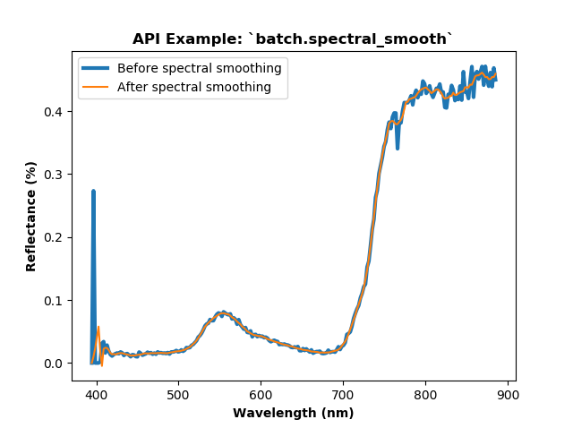
<p>Notice how the <em>&quot;choppiness&quot;</em> of the spectral curve is lessened
after the smoothing operation. There are spectral regions that
perhaps had a lower <em>signal:noise</em> ratio and did not do particularlly
well at smoothing (i.e., &lt; 410 nm, ~770 nm, and ~820 nm). It may be
wise to perform <code class="docutils literal notranslate"><span class="pre">batch.spectral_smooth</span></code> <em>after</em>
<a class="reference external" href="hs_process.batch.html#hs_process.batch.spectral_clip">batch.spectral_clip</a>.</p>
</dd></dl>

</dd></dl>

</div>


    </div>
      
  </div>
</div>
<footer class="footer">
  <div class="container">
    <p class="pull-right">
      <a href="#">Back to top</a>
      
    </p>
    <p>
        &copy; Copyright 2020, Tyler J. Nigon.<br/>
      Created using <a href="http://sphinx-doc.org/">Sphinx</a> 2.1.2.<br/>
    </p>
  </div>
</footer>
  </body>
</html>